Content from Acceder a las distribuciones de retrasos epidemiológicos
Última actualización: 2024-07-10 | Mejora esta página
Hoja de ruta
Preguntas
- ¿Cómo acceder a las distribuciones de retraso de la enfermedad desde una base de datos preestablecida para su uso en el análisis?
Objetivos
- Obtener retrasos de una base de datos de búsqueda bibliográfica con
{epiparameter}. - Obtén parámetros de distribución y estadísticas resumidas de distribuciones de retrasos.
Introducción
Las enfermedades infecciosas siguen un ciclo de infección, que generalmente incluye las siguientes fases: periodo presintomático, periodo sintomático y periodo de recuperación, tal y como se describe en su historia natural. Estos periodos de tiempo pueden utilizarse para comprender la dinámica de transmisión e informar sobre las intervenciones de prevención y control de enfermedades.

Definiciones
Mira el glosario ¡para ver las definiciones de todos los periodos de tiempo de la figura anterior!
Sin embargo, al inicio de una epidemia, los esfuerzos de modelamiento
pueden verse retrasados por la falta de un recurso centralizado que
resuma los parámetros de entrada para la enfermedad de interés (Nash et al., 2023).
Proyectos como {epiparameter} y {epireview}
están construyendo catálogos en línea siguiendo protocolos de síntesis
de literatura que pueden ayudar a parametrizar modelos accediendo
fácilmente a una extensa biblioteca de parámetros epidemiológicos
previamente estimados de brotes pasados.
Para ejemplificar cómo utilizar el {epiparameter} R en
tu canal de análisis, nuestro objetivo en este episodio será acceder a
un conjunto específico de parámetros epidemiológicos de la literatura,
en lugar de copiarlos y pegarlos manualmente, para integrarlos en un
flujo de trabajo de análisis con EpiNow2
<En este episodio, aprenderemos a acceder a un conjunto concreto
de parámetros epidemiológicos de la bibliografía y a obtener sus
estadísticas resumidas mediante
{epiparameter}. –>
Empecemos cargando el paquete {epiparameter}.
Utilizaremos la tubería %>% para conectar algunas de sus
funciones, algunas funciones detibble y
dplyr, así que llamaremos también al
paquetetidyverse:
R
library(epiparameter)
library(tidyverse)
El doble punto
El doble punto :: en R te permite llamar a una función
específica de un paquete sin cargar todo el paquete en el entorno
actual.
Por ejemplo dplyr::filter(data, condition) utiliza
filter() del paquetedplyr.
Esto nos ayuda a recordar las funciones del paquete y a evitar conflictos de espacio de nombres.
El problema
Si queremos estimar la transmisibilidad de una infección, es común
utilizar un paquete como EpiEstim o
EpiNow2. Sin embargo, ambos requieren cierta información
epidemiológica como entrada. Por ejemplo, en EpiNow2
utilizamos EpiNow2::Gamma() para especificar un tiempo de generación como una
distribución de probabilidad añadiendo su media mean
desviación estándar (sd) y el valor máximo
(max).
Para especificar un tiempo de generación generation_time
que sigue a un Gamma con media \(\mu
= 4\) y desviación estándar \(\sigma =
2\) y un valor máximo de 20, escribimos
R
generation_time <-
EpiNow2::Gamma(
mean = 4,
sd = 2,
max = 20
)
Es una práctica común para analistas, buscar manualmente en la
literatura disponible y copiar y pegar el resumen
estadístico o los parámetros de distribución
de las publicaciones científicas. Un reto frecuente al que nos
enfrentamos a menudo es que la información sobre las distintas
distribuciones estadísticas no es coherente en toda la literatura. El
objetivo de {epiparameter} es facilitar el acceso a
estimaciones confiables de los parámetros de distribución para una serie
de enfermedades infecciosas, de modo que puedan implementarse fácilmente
en las líneas de análisis de brotes.
En este episodio acceder a a las estadísticas resumidas del
tiempo de generación de COVID-19 desde la biblioteca de parámetros
epidemiológicos proporcionada por {epiparameter}. Estos
parámetros pueden utilizarse para estimar la transmisibilidad de esta
enfermedad utilizando EpiNow2 en episodios
posteriores.
Empecemos por ver cuántas entradas hay disponibles en el base
de datos de distribuciones epidemiológicas en
{epiparameter} utilizando epidist_db() para la
distribución epidemiológica epi_dist llamada tiempo de
generación con la cadena "generation":
R
epiparameter::epidist_db(
epi_dist = "generation"
)
SALIDA
Returning 1 results that match the criteria (1 are parameterised).
Use subset to filter by entry variables or single_epidist to return a single entry.
To retrieve the citation for each use the 'get_citation' functionSALIDA
Disease: Influenza
Pathogen: Influenza-A-H1N1
Epi Distribution: generation time
Study: Lessler J, Reich N, Cummings D, New York City Department of Health and
Mental Hygiene Swine Influenza Investigation Team (2009). "Outbreak of
2009 Pandemic Influenza A (H1N1) at a New York City School." _The New
England Journal of Medicine_. doi:10.1056/NEJMoa0906089
<https://doi.org/10.1056/NEJMoa0906089>.
Distribution: weibull
Parameters:
shape: 2.360
scale: 3.180Actualmente, en la biblioteca de parámetros epidemiológicos, tenemos
una entrada de tiempo generación "generation" para
Influenza. En su lugar, podemos consultar intervalos seriales
"serial" para COVID-19. ¡Veamos qué debemos
tener en cuenta para ello!
Tiempo de generación vs intervalo serial
El tiempo de generación, junto con el número reproductivo (\(R\)), proporcionan información valiosa sobre la fuerza de transmisión e informan la implementación de medidas de control. Dado un \(R>1\), cuanto más corto sea el tiempo de generación, más rápidamente aumentará la incidencia de casos de enfermedad.
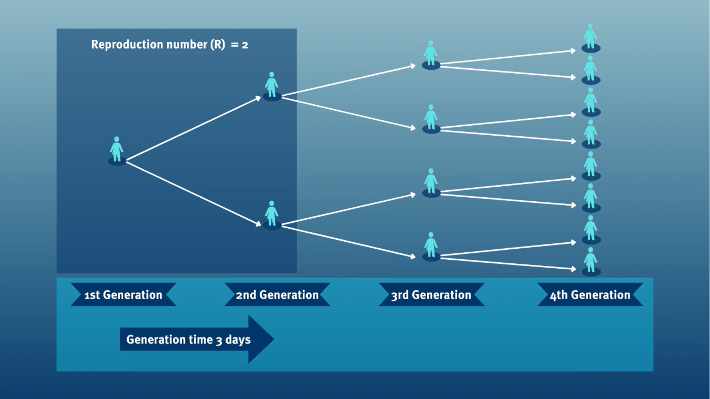
Al calcular el número de reproducción efectivo (\(R_{t}\)), el tiempo de generación suele aproximarse mediante el intervalo serial serial. Esta aproximación frecuente se debe a que es más fácil observar y medir el inicio de los síntomas que el inicio de la infección.

Sin embargo, usar elintervalo serial como una aproximación del tiempo de generación es válido principalmente para las enfermedades en las que la infecciosidad comienza después de la aparición de los síntomas (Chung Lau et al., 2021). En los casos en que la infecciosidad comienza antes de la aparición de los síntomas, los intervalos seriales pueden tener valores negativos, como ocurre en las enfermedades con transmisión presintomática (Nishiura et al., 2020).
De los periodos de tiempo a las distribuciones de probabilidad.
Cuando calculamos el intervalo serial vemos que no todos los pares de casos tienen la misma duración temporal. Observaremos esta variabilidad para cualquier par de casos y periodo de tiempo individual, incluido el periodo de incubación y periodo infeccioso.
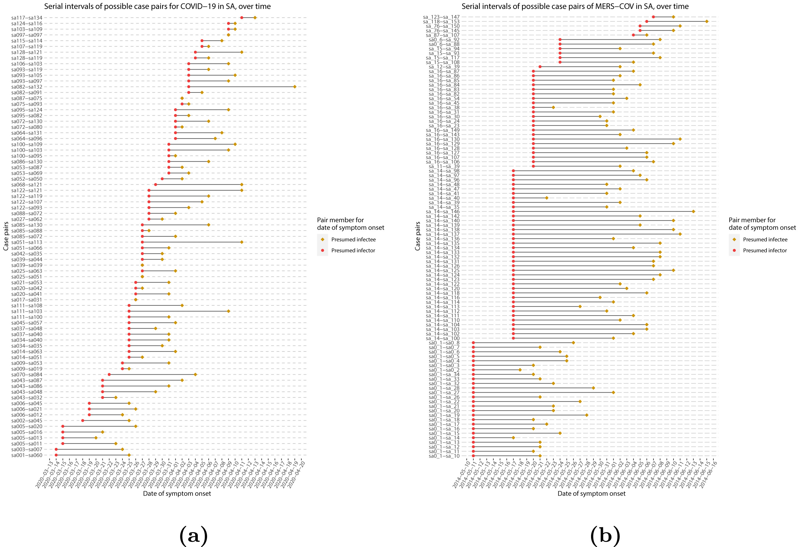
Para resumir estos datos de periodos de tiempo individuales y de pares, podemos encontrar las distribuciones estadísticas que mejor se ajusten a los datos (McFarland et al., 2023).

Las distribuciones estadísticas se resumen en función de sus estadísticas de resumen como la ubicación (media y percentiles) y dispersión (varianza o desviación estándar) de la distribución, o con su parámetros de distribución que informan sobre la forma (forma y tasa/escala) de la distribución. Estos valores estimados pueden reportarse con su incertidumbre (intervalos de confianza del 95%).
| Gamma | media | forma | velocidad/escala |
|---|---|---|---|
| MERS-CoV | 14.13(13.9-14.7) | 6.31(4.88-8.52) | 0.43(0.33-0.60) |
| COVID-19 | 5.1(5.0-5.5) | 2.77(2.09-3.88) | 0.53(0.38-0.76) |
| Weibull | media | forma | velocidad/escala |
|---|---|---|---|
| MERS-CoV | 14.2(13.3-15.2) | 3.07(2.64-3.63) | 16.1(15.0-17.1) |
| COVID-19 | 5.2(4.6-5.9) | 1.74(1.46-2.11) | 5.83(5.08-6.67) |
| Log normal | media | media-log | sd-log |
|---|---|---|---|
| MERS-CoV | 14.08(13.1-15.2) | 2.58(2.50-2.68) | 0.44(0.39-0.5) |
| COVID-19 | 5.2(4.2-6.5) | 1.45(1.31-1.61) | 0.63(0.54-0.74) |
Tabla: Estimaciones del intervalo serial utilizando las distribuciones Gamma, Weibull y Log Normal. Los intervalos de confianza del 95% para los parámetros de forma y escala (logmedia y sd para Log Normal) se muestran entre paréntesis (Althobaity et al., 2022).
Intervalo serial
Supongamos que COVID-19 y SARS tienen valores similares de número de reproducción y que el intervalo serial se aproxima al tiempo de generación.
Dado el intervalo serial de ambas infecciones en la siguiente gráfica
- ¿Cuál sería más difícil de controlar?
- ¿Por qué llegas a esa conclusión?

El pico de cada curva puede informarte sobre la ubicación de la media de cada distribución. Cuanto mayor sea la media, mayor será el intervalo serial.
¿Cuál sería más difícil de controlar?
COVID-19
¿Por qué concluyes eso?
COVID-19 tiene el intervalo serial promedioo más bajo. El valor promedio aproximado del intervalo serial de COVID-19 es de unos cuatro días, mientras que del SARS es de aproximadamentesiete días. Por lo tanto, es probable que COVID-19 tenga nuevas generaciones en menos tiempo que el SARS, asumiendo valores de número de reproducción similares.
Elección de parámetros epidemiológicos
En esta sección, utilizaremos {epiparameter} para
obtener el intervalo serial de COVID-19, como una alternativa al tiempo
de generación.
Preguntémonos ahora cuántos parámetros tenemos en la base de datos de
distribuciones epidemiológicas (epidist_db()) con la
enfermedaddisease denominada covid-19.
¡Ejecútalo localmente!
R
epiparameter::epidist_db(
disease = "covid"
)
Desde el paquete {epiparameter} podemos utilizar la
función epidist_db() para consultar cualquier enfermedad
disease y también para una distribución epidemiológica
concreta (epi_dist). Ejecútalo en tu consola:
R
epiparameter::epidist_db(
disease = "COVID",
epi_dist = "serial"
)
Con esta combinación de consultas, obtenemos más de una distribución
de retraso. Esta salida es un <epidist> objeto de
clase.
INSENSIBLE A MAYÚSCULAS Y MINÚSCULAS
epidist_db es insensible
a mayúsculas y minúsculas. Esto significa que puedes utilizar
cadenas con letras en mayúsculas o minúsculas indistintamente. Cadenas
como "serial", "serial interval" o
"serial_interval" también son válidos.
Como se sugiere en los resultados, para resumir una
<epidist> y obtener los nombres de las columnas de la
base de datos de parámetros subyacente, podemos añadir la función
epiparameter::parameter_tbl() al código anterior utilizando
la tubería %>%:
R
epiparameter::epidist_db(
disease = "covid",
epi_dist = "serial"
) %>%
epiparameter::parameter_tbl()
SALIDA
Returning 4 results that match the criteria (3 are parameterised).
Use subset to filter by entry variables or single_epidist to return a single entry.
To retrieve the citation for each use the 'get_citation' functionSALIDA
# Parameter table:
# A data frame: 4 × 7
disease pathogen epi_distribution prob_distribution author year sample_size
<chr> <chr> <chr> <chr> <chr> <dbl> <dbl>
1 COVID-19 SARS-CoV… serial interval <NA> Alene… 2021 3924
2 COVID-19 SARS-CoV… serial interval lnorm Nishi… 2020 28
3 COVID-19 SARS-CoV… serial interval weibull Nishi… 2020 18
4 COVID-19 SARS-CoV… serial interval norm Yang … 2020 131En el epiparameter::parameter_tbl() salida, también
podemos encontrar distintos tipos de distribuciones de probabilidad (por
ejemplo, Log-normal, Weibull, Normal).
{epiparameter} utiliza la base R para las
distribuciones. Por eso Normal logarítmica se llama
lnorm.
Las entradas con un valor faltante (<NA>) en la
columna prob_distribution son entradas no
parametrizada. Tienen estadísticas de resumen, pero no una
distribución de probabilidad. Compara estos dos resultados:
R
# get an <epidist> object
distribution <-
epiparameter::epidist_db(
disease = "covid",
epi_dist = "serial"
)
distribution %>%
# pluck the first entry in the object class <list>
pluck(1) %>%
# check if <epidist> object have distribution parameters
is_parameterised()
# check if the second <epidist> object
# have distribution parameters
distribution %>%
pluck(2) %>%
is_parameterised()
Las entradas parametrizadas tienen un método de Inferencia
Como se detalla en ?is_parameterised una distribución
parametrizada es la entrada que tiene una distribución de probabilidad
asociada proporcionada por un método inference_method como
se muestra en los metadatosmetadata:
R
distribution[[1]]$metadata$inference_method
distribution[[2]]$metadata$inference_method
distribution[[4]]$metadata$inference_method
¡Encuentra tus distribuciones de retraso!
Tómate 2 minutos para explorar el paquete
{epiparameter}.
Elige una enfermedad de interés (por ejemplo, Influenza estacional, sarampión, etc.) y una distribución de retrasos (por ejemplo, el periodo de incubación, desde el inicio hasta la muerte, etc.).
Encuéntra:
¿Cuántas distribuciones de retraso hay para esa enfermedad?
¿Cuántos tipos de distribución de probabilidad (por ejemplo, gamma, log normal) hay para un retraso determinado en esa enfermedad?
Pregunta:
¿Reconoces los artículos?
¿Debería la revisión de literatura de
{epiparameter}considerar otro artículo?
La función epidist_db() con disease sólo
con la enfermedad cuenta el número de entradas como
- estudios, y
- distribuciones de retrasos.
La función epidist_db() función con la enfermedad
disease y epi_dist obtiene una lista de todas
las entradas con:
- la cita completa,
- en tipo de distribución de probabilidad, y
- valores de los parámetros de la distribución.
La combinación de epidist_db() y
parameter_tbl() obtiene un marco de datos de todas las
entradas con columnas como
- el tipo de la distribución de probabilidad por cada fila, y
- autor y año del estudio.
Elegimos explorar las distribuciones de retraso del Ébola:
R
# we expect 16 delays distributions for ebola
epiparameter::epidist_db(
disease = "ebola"
)
SALIDA
Returning 17 results that match the criteria (17 are parameterised).
Use subset to filter by entry variables or single_epidist to return a single entry.
To retrieve the citation for each use the 'get_citation' functionSALIDA
# List of 17 <epidist> objects
Number of diseases: 1
❯ Ebola Virus Disease
Number of epi distributions: 9
❯ hospitalisation to death ❯ hospitalisation to discharge ❯ incubation period ❯ notification to death ❯ notification to discharge ❯ offspring distribution ❯ onset to death ❯ onset to discharge ❯ serial interval
[[1]]
Disease: Ebola Virus Disease
Pathogen: Ebola Virus
Epi Distribution: offspring distribution
Study: Lloyd-Smith J, Schreiber S, Kopp P, Getz W (2005). "Superspreading and
the effect of individual variation on disease emergence." _Nature_.
doi:10.1038/nature04153 <https://doi.org/10.1038/nature04153>.
Distribution: nbinom
Parameters:
mean: 1.500
dispersion: 5.100
[[2]]
Disease: Ebola Virus Disease
Pathogen: Ebola Virus-Zaire Subtype
Epi Distribution: incubation period
Study: Eichner M, Dowell S, Firese N (2011). "Incubation period of ebola
hemorrhagic virus subtype zaire." _Osong Public Health and Research
Perspectives_. doi:10.1016/j.phrp.2011.04.001
<https://doi.org/10.1016/j.phrp.2011.04.001>.
Distribution: lnorm
Parameters:
meanlog: 2.487
sdlog: 0.330
[[3]]
Disease: Ebola Virus Disease
Pathogen: Ebola Virus-Zaire Subtype
Epi Distribution: onset to death
Study: The Ebola Outbreak Epidemiology Team, Barry A, Ahuka-Mundeke S, Ali
Ahmed Y, Allarangar Y, Anoko J, Archer B, Abedi A, Bagaria J, Belizaire
M, Bhatia S, Bokenge T, Bruni E, Cori A, Dabire E, Diallo A, Diallo B,
Donnelly C, Dorigatti I, Dorji T, Waeber A, Fall I, Ferguson N,
FitzJohn R, Tengomo G, Formenty P, Forna A, Fortin A, Garske T,
Gaythorpe K, Gurry C, Hamblion E, Djingarey M, Haskew C, Hugonnet S,
Imai N, Impouma B, Kabongo G, Kalenga O, Kibangou E, Lee T, Lukoya C,
Ly O, Makiala-Mandanda S, Mamba A, Mbala-Kingebeni P, Mboussou F,
Mlanda T, Makuma V, Morgan O, Mulumba A, Kakoni P, Mukadi-Bamuleka D,
Muyembe J, Bathé N, Ndumbi Ngamala P, Ngom R, Ngoy G, Nouvellet P, Nsio
J, Ousman K, Peron E, Polonsky J, Ryan M, Touré A, Towner R, Tshapenda
G, Van De Weerdt R, Van Kerkhove M, Wendland A, Yao N, Yoti Z, Yuma E,
Kalambayi Kabamba G, Mwati J, Mbuy G, Lubula L, Mutombo A, Mavila O,
Lay Y, Kitenge E (2018). "Outbreak of Ebola virus disease in the
Democratic Republic of the Congo, April–May, 2018: an epidemiological
study." _The Lancet_. doi:10.1016/S0140-6736(18)31387-4
<https://doi.org/10.1016/S0140-6736%2818%2931387-4>.
Distribution: gamma
Parameters:
shape: 2.400
scale: 3.333
# ℹ 14 more elements
# ℹ Use `print(n = ...)` to see more elements.
# ℹ Use `parameter_tbl()` to see a summary table of the parameters.
# ℹ Explore database online at: https://epiverse-trace.github.io/epiparameter/dev/articles/database.htmlAhora, a partir de la salida de
epiparameter::epidist_db() ¿Qué es un distribución de la
descendencia?
Elegimos encontrar los periodos de incubación del ébola. Esta salida lista todos los documentos y parámetros encontrados. Ejecútalo localmente si es necesario:
R
epiparameter::epidist_db(
disease = "ebola",
epi_dist = "incubation"
)
Utilizamos parameter_tbl() para obtener una
visualización resumida de todo:
R
# we expect 2 different types of delay distributions
# for ebola incubation period
epiparameter::epidist_db(
disease = "ebola",
epi_dist = "incubation"
) %>%
parameter_tbl()
SALIDA
Returning 5 results that match the criteria (5 are parameterised).
Use subset to filter by entry variables or single_epidist to return a single entry.
To retrieve the citation for each use the 'get_citation' functionSALIDA
# Parameter table:
# A data frame: 5 × 7
disease pathogen epi_distribution prob_distribution author year sample_size
<chr> <chr> <chr> <chr> <chr> <dbl> <dbl>
1 Ebola Vi… Ebola V… incubation peri… lnorm Eichn… 2011 196
2 Ebola Vi… Ebola V… incubation peri… gamma WHO E… 2015 1798
3 Ebola Vi… Ebola V… incubation peri… gamma WHO E… 2015 49
4 Ebola Vi… Ebola V… incubation peri… gamma WHO E… 2015 957
5 Ebola Vi… Ebola V… incubation peri… gamma WHO E… 2015 792Encontramos dos tipos de distribuciones de probabilidad para esta consulta: log normal y gamma.
¿Cómo realiza {epiparameter} la recopilación y revisión
de la literatura revisada por pares? ¡Te invitamos a leer la viñeta
sobre “Protocolo
de Recopilación y Síntesis de Datos” !
Selecciona una única distribución
En epiparameter::epidist_db() funciona como una función
de filtrado o subconjunto. Utilicemos el argumento author
para filtrar los parámetros Hiroshi Nishiura:
R
epiparameter::epidist_db(
disease = "covid",
epi_dist = "serial",
author = "Hiroshi"
) %>%
epiparameter::parameter_tbl()
SALIDA
Returning 2 results that match the criteria (2 are parameterised).
Use subset to filter by entry variables or single_epidist to return a single entry.
To retrieve the citation for each use the 'get_citation' functionSALIDA
# Parameter table:
# A data frame: 2 × 7
disease pathogen epi_distribution prob_distribution author year sample_size
<chr> <chr> <chr> <chr> <chr> <dbl> <dbl>
1 COVID-19 SARS-CoV… serial interval lnorm Nishi… 2020 28
2 COVID-19 SARS-CoV… serial interval weibull Nishi… 2020 18Seguimos obteniendo más de un parámetro epidemiológico. Podemos
establecer el argumento single_epidist en TRUE
para obtener sólo uno:
R
epiparameter::epidist_db(
disease = "covid",
epi_dist = "serial",
single_epidist = TRUE
)
SALIDA
Using Nishiura H, Linton N, Akhmetzhanov A (2020). "Serial interval of novel
coronavirus (COVID-19) infections." _International Journal of
Infectious Diseases_. doi:10.1016/j.ijid.2020.02.060
<https://doi.org/10.1016/j.ijid.2020.02.060>..
To retrieve the citation use the 'get_citation' functionSALIDA
Disease: COVID-19
Pathogen: SARS-CoV-2
Epi Distribution: serial interval
Study: Nishiura H, Linton N, Akhmetzhanov A (2020). "Serial interval of novel
coronavirus (COVID-19) infections." _International Journal of
Infectious Diseases_. doi:10.1016/j.ijid.2020.02.060
<https://doi.org/10.1016/j.ijid.2020.02.060>.
Distribution: lnorm
Parameters:
meanlog: 1.386
sdlog: 0.568¿Cómo funciona ‘single_epidist’?
Consultando la documentación de ayuda de
?epiparameter::epidist_db():
- Si varias entradas coinciden con los argumentos suministrados y
single_epidist = TRUEentonces devolverá el<epidist>parametrizado con el mayor tamaño de muestra - Si varias entradas son iguales después de esta clasificación, se devolverá la primera entrada.
¿Qué es un <epidist>parametrizado ? Mira
?is_parameterised.
Asignemos este objeto de clase <epidist> al
objetocovid_serialint.
R
covid_serialint <-
epiparameter::epidist_db(
disease = "covid",
epi_dist = "serial",
single_epidist = TRUE
)
Puedes utilizar plot() para objetos
<epidist> para visualizarlos:
- la Función de densidad de probabilidad (PDF, por sus siglas en inglés) y
- la Función de distribución acumulativa (CDF, por sus siglas en inglés).
R
# plot <epidist> object
plot(covid_serialint)
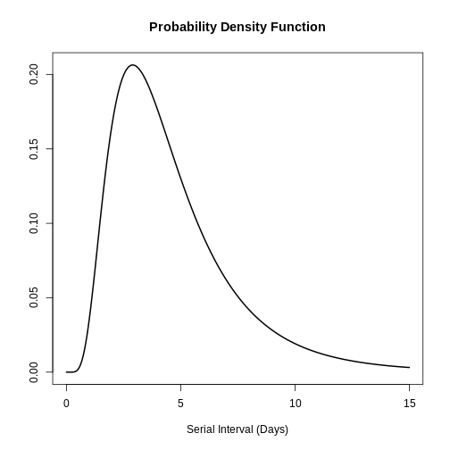
Con el argumento day_range, puedes cambiar la duración o
el número de días del x eje. Explora cómo se ve esto:
R
# plot <epidist> object
plot(covid_serialint, day_range = 0:20)
Extrae las estadísticas de resumen
Podemos obtener la media o primediomean y la desviación
estándar(sd) a partir de <epidist>
accediendo al objetosummary_stats:
R
# get the mean
covid_serialint$summary_stats$mean
SALIDA
[1] 4.7¡Ahora tenemos un parámetro epidemiológico que podemos reutilizar!
Dado que el covid_serialint es una distribución log normal
lnorm o, podemos reemplazar las estadísticas de
resumen que introducimos en la función
EpiNow2::LogNormal()
R
generation_time <-
EpiNow2::LogNormal(
mean = covid_serialint$summary_stats$mean, # replaced!
sd = covid_serialint$summary_stats$sd, # replaced!
max = 20
)
En el próximo episodio aprenderemos a utilizar EpiNow2
para especificar correctamente las distribuciones y estimar la
transmisibilidad. Después, cómo utilizar funciones de
distribución para obtener un valor máximo (max)
para EpiNow2::LogNormal() y utilizar
{epiparameter} en tu análisis.
Distribuciones logarítmicas normales
Si necesitas los parámetros de la distribución log normal log
normales en lugar de las estadísticas de resumen, podemos
utilizar epiparameter::get_parameters():
R
covid_serialint_parameters <-
epiparameter::get_parameters(covid_serialint)
covid_serialint_parameters
SALIDA
meanlog sdlog
1.3862617 0.5679803 Se obtiene un vector de clase <numeric> ¡listo
para usar como entrada para cualquier otro paquete!
Desafíos
R
# ebola serial interval
ebola_serial <-
epiparameter::epidist_db(
disease = "ebola",
epi_dist = "serial",
single_epidist = TRUE
)
SALIDA
Using WHO Ebola Response Team, Agua-Agum J, Ariyarajah A, Aylward B, Blake I,
Brennan R, Cori A, Donnelly C, Dorigatti I, Dye C, Eckmanns T, Ferguson
N, Formenty P, Fraser C, Garcia E, Garske T, Hinsley W, Holmes D,
Hugonnet S, Iyengar S, Jombart T, Krishnan R, Meijers S, Mills H,
Mohamed Y, Nedjati-Gilani G, Newton E, Nouvellet P, Pelletier L,
Perkins D, Riley S, Sagrado M, Schnitzler J, Schumacher D, Shah A, Van
Kerkhove M, Varsaneux O, Kannangarage N (2015). "West African Ebola
Epidemic after One Year — Slowing but Not Yet under Control." _The New
England Journal of Medicine_. doi:10.1056/NEJMc1414992
<https://doi.org/10.1056/NEJMc1414992>..
To retrieve the citation use the 'get_citation' functionR
ebola_serial
SALIDA
Disease: Ebola Virus Disease
Pathogen: Ebola Virus
Epi Distribution: serial interval
Study: WHO Ebola Response Team, Agua-Agum J, Ariyarajah A, Aylward B, Blake I,
Brennan R, Cori A, Donnelly C, Dorigatti I, Dye C, Eckmanns T, Ferguson
N, Formenty P, Fraser C, Garcia E, Garske T, Hinsley W, Holmes D,
Hugonnet S, Iyengar S, Jombart T, Krishnan R, Meijers S, Mills H,
Mohamed Y, Nedjati-Gilani G, Newton E, Nouvellet P, Pelletier L,
Perkins D, Riley S, Sagrado M, Schnitzler J, Schumacher D, Shah A, Van
Kerkhove M, Varsaneux O, Kannangarage N (2015). "West African Ebola
Epidemic after One Year — Slowing but Not Yet under Control." _The New
England Journal of Medicine_. doi:10.1056/NEJMc1414992
<https://doi.org/10.1056/NEJMc1414992>.
Distribution: gamma
Parameters:
shape: 2.188
scale: 6.490R
# get the sd
ebola_serial$summary_stats$sd
SALIDA
[1] 9.6R
# get the sample_size
ebola_serial$metadata$sample_size
SALIDA
[1] 305Intenta visualizar esta distribución utilizando
plot().
Explora también todos los demás elementos anidados dentro del objecto
<epidist> .
Comparte sobre:
- ¿Qué elementos encuentras útiles para tu análisis?
- ¿Qué otros elementos te gustaría ver en este objeto? ¿Cómo?
Parámetro de severidad del ébola
Un parámetro de severidad como la duración de la hospitalización podría añadir información necesaria sobre la capacidad de camas en respuesta a un brote (Cori et al., 2017).
Para el ébola:
- ¿Cuál es la estimación puntual reportada de la duración media de la asistencia sanitaria y el aislamiento de casos?
Un retraso informativo debe medir el tiempo transcurrido desde el inicio de los síntomas hasta la recuperación o la muerte.
Encuentra una forma de acceder a toda la base de datos
{epiparameter} y averigua cómo se puede almacenar ese
retraso. La salida de parameter_tbl() es un dataframe o
tabla de datos.
R
# one way to get the list of all the available parameters
epidist_db(disease = "all") %>%
parameter_tbl() %>%
as_tibble() %>%
distinct(epi_distribution)
SALIDA
Returning 122 results that match the criteria (99 are parameterised).
Use subset to filter by entry variables or single_epidist to return a single entry.
To retrieve the citation for each use the 'get_citation' functionSALIDA
# A tibble: 12 × 1
epi_distribution
<chr>
1 incubation period
2 serial interval
3 generation time
4 onset to death
5 offspring distribution
6 hospitalisation to death
7 hospitalisation to discharge
8 notification to death
9 notification to discharge
10 onset to discharge
11 onset to hospitalisation
12 onset to ventilation R
ebola_severity <- epidist_db(
disease = "ebola",
epi_dist = "onset to discharge"
)
SALIDA
Returning 1 results that match the criteria (1 are parameterised).
Use subset to filter by entry variables or single_epidist to return a single entry.
To retrieve the citation for each use the 'get_citation' functionR
# point estimate
ebola_severity$summary_stats$mean
SALIDA
[1] 15.1Comprueba que para algunas entradas de {epiparameter}
también tendrás la incertidumbre en torno a las estimación
puntual de cada estadística de síntesis:
R
# 95% confidence intervals
ebola_severity$summary_stats$mean_ci
SALIDA
[1] 95R
# limits of the confidence intervals
ebola_severity$summary_stats$mean_ci_limits
SALIDA
[1] 14.6 15.6Un zoológico de distribuciones
¡Explora esta shinyapp llamada The distribution zoo !
Sigue estos pasos para reproducir la forma de la distribución de
intervalo serial COVID desde {epiparameter}
(covid_serialint objeto):
- Accede al sitio web de shiny app https://ben18785.shinyapps.io/distribution-zoo/,
- Ve al panel izquierdo,
- Mantén pulsado el botón Categoría de distribución:
Continuous Univariate, - Selecciona un nuevo Tipo de distribución:
Log-Normal, - Mueve los controles deslizantes es decir, el
elemento de control gráfico que te permite ajustar un valor moviendo una
barra horizontal hacia la posición
covid_serialintparámetros.
Reprodúcelos con el botón distribution y todos sus
elementos de lista: [[2]], [[3]] y
[[4]]. Explora cómo cambia la forma de una distribución
cuando cambian sus parámetros.
Comparte sobre:
- ¿Qué otras funciones del sitio web te parecen útiles?
Puntos Clave
- Utiliza
{epiparameter}para acceder al catálogo de literatura sobre distribuciones epidemiológicas de retraso. - Utiliza
epidist_db()para seleccionar distribuciones de retraso individuales. - Utiliza
parameter_tbl()para obtener una visión general de las distribuciones de retardo múltiples. - Reutiliza las estimaciones conocidas para una enfermedad desconocida en la fase inicial de un brote cuando no se disponga de datos de rastreo de contactos.
Content from Cuantificar la transmisión
Última actualización: 2024-07-10 | Mejora esta página
Hoja de ruta
Preguntas
- ¿Cómo puedo estimar el número de reproducción variable en el tiempo (\(Rt\)) y la tasa de crecimiento a partir de una serie temporal de datos de casos?
- ¿Cómo puedo cuantificar la heterogeneidad geográfica a partir de estas métricas de transmisión?
Objetivos
- Aprender a estimar las métricas de transmisión a partir de una serie
temporal de datos de casos utilizando el paquete R
EpiNow2
Requisitos previos
Los alumnos deben familiarizarse con los siguientes conceptos antes de trabajar con este tutorial:
Estadística Distribuciones de probabilidad y principio del análisis bayesiano.
Teoría epidémica Número de reproducción efectiva.
Ciencia de los datos Transformación y visualización de datos. Puedes revisar el episodio en Agregar y visualizar datos de incidencia.
Recordatorio: el Número de Reproducción Efectiva, \(R_t\)
El número básico de reproducción, \(R_0\) es el número medio de casos causados por un individuo infeccioso en una población totalmente susceptible.
Pero en un brote en curso, la población no permanece totalmente susceptible, ya que los que se recuperan de la infección suelen ser inmunes. Además, puede haber cambios de comportamiento u otros factores que afecten la transmisión. Por lo tanto, cuando nos interesa controlar los cambios en la transmisión, es más importante tener en cuenta el valor del número de reproducción efectiva, \(R_t\) y el número medio de casos causados por un individuo infeccioso en la población en el momento \(t\).
Introducción
La intensidad de la transmisión de un brote se cuantifica mediante dos métricas clave: el número de reproducción, que informa sobre la fuerza de la transmisión indicando cuántos casos nuevos se esperan de cada caso existente; y la tasa de crecimiento que informa sobre la velocidad de la transmisión, indicando la rapidez con que el brote se propaga o disminuye (tiempo de duplicación/desaparición) dentro de una población. Para más detalles sobre la distinción entre velocidad y fuerza de transmisión y las implicaciones para el control, revisa Dushoff y Park, 2021.
Para estimar estas métricas clave utilizando datos de casos, debemos tener en cuenta los retrasos entre la fecha de las infecciones y la fecha de los casos notificados. En una situación de brote, normalmente sólo se dispone de datos sobre las fechas notificadas, por lo que debemos utilizar métodos de estimación para tener en cuenta estos retrasos cuando intentemos comprender los cambios en la transmisión a lo largo del tiempo.
En los próximos tutoriales nos centraremos en cómo utilizar las funciones de EpiNow2 para estimar las métricas de transmisión de los datos de casos. No cubriremos el trasfondo teórico de los modelos ni el marco de inferencia; para más detalles sobre estos conceptos, consulta la viñeta.
En este tutorial vamos a aprender a utilizar el paquete
EpiNow2 para estimar el número de reproducción variable
en el tiempo. Obtendremos los datos de entrada de
incidence2. Utilizaremos el paquete tidyr
y dplyr para ordenar algunas de sus salidas,
ggplot2 para visualizar la distribución de casos, y el
operador tubería %>% para conectar algunas de sus
funciones, así que también llamaremos al paquete
tidyverse:
R
library(EpiNow2)
library(incidence2)
library(tidyverse)
El doble punto
El doble punto :: en R te permite llamar a una función
específica de un paquete sin cargar todo el paquete en el entorno
actual.
Por ejemplo dplyr::filter(data, condition) utiliza la
función filter() del paquete dplyr.
Esto nos ayuda a recordar las funciones del paquete y a evitar conflictos de espacio de nombres.
Inferencia bayesiana
El paquete R EpiNow2 utiliza inferencia bayesiana para estimar las
cifras de reproducción y los tiempos de infección basándose en las
fechas de notificación.
En la inferencia bayesiana, utilizamos el conocimiento previo (distribuciones previas) con los datos (en una función de verosimilitud) para hallar la probabilidad posterior.
Probabilidad posterior \(\propto\) verosimilitud \(\times\) probabilidad previa
Distribuciones de retrasos y datos de casos
Datos de casos
Para explorar las funciones de EpiNow2 utilizaremos los
datos del brote del inicio de la pandemia COVID-19 del Reino Unido. Los
datos están disponibles en el paquete R incidence2.
R
dplyr::as_tibble(incidence2::covidregionaldataUK)
SALIDA
# A tibble: 6,370 × 13
date region region_code cases_new cases_total deaths_new deaths_total
<date> <chr> <chr> <dbl> <dbl> <dbl> <dbl>
1 2020-01-30 East Mi… E12000004 NA NA NA NA
2 2020-01-30 East of… E12000006 NA NA NA NA
3 2020-01-30 England E92000001 2 2 NA NA
4 2020-01-30 London E12000007 NA NA NA NA
5 2020-01-30 North E… E12000001 NA NA NA NA
6 2020-01-30 North W… E12000002 NA NA NA NA
7 2020-01-30 Norther… N92000002 NA NA NA NA
8 2020-01-30 Scotland S92000003 NA NA NA NA
9 2020-01-30 South E… E12000008 NA NA NA NA
10 2020-01-30 South W… E12000009 NA NA NA NA
# ℹ 6,360 more rows
# ℹ 6 more variables: recovered_new <dbl>, recovered_total <dbl>,
# hosp_new <dbl>, hosp_total <dbl>, tested_new <dbl>, tested_total <dbl>Para utilizar los datos, debemos darles formato para que tengan dos columnas:
-
date: la fecha (para validar si un objeto es de tipo fecha ver?is.Date()), -
confirmnúmero de casos confirmados en esa fecha.
Utilicemos tidyr y incidence2 para ello:
R
cases <- incidence2::covidregionaldataUK %>%
# use {tidyr} to preprocess missing values
tidyr::replace_na(base::list(cases_new = 0)) %>%
# use {incidence2} to compute the daily incidence
incidence2::incidence(
date_index = "date",
counts = "cases_new",
count_values_to = "confirm",
date_names_to = "date",
complete_dates = TRUE
) %>%
dplyr::select(-count_variable)
Con incidence2::incidence() agregamos casos en distintos
tiempos intervalos (es decir, días, semanas o meses) o por
grupo categorías. También podemos tener fechas completas para
todo el rango de fechas por categoría de grupo utilizando
complete_dates = TRUE Explora más adelante la incidence2::incidence()
manual de referencia
Podemos obtener un objeto similar a cases de la tabla de
datos (data.frame)
incidence2::covidregionaldataUK utilizando las siguientes
funciones del paquete dplyr:
R
incidence2::covidregionaldataUK %>%
dplyr::select(date, cases_new) %>%
dplyr::group_by(date) %>%
dplyr::summarise(confirm = sum(cases_new, na.rm = TRUE)) %>%
dplyr::ungroup()
Sin embargo, la función incidence2::incidence() contiene
argumentos prácticos como complete_dates que facilitan la
obtención de un objeto de incidencia con el mismo rango de fechas para
cada agrupación sin necesidad de líneas de código adicionales ni de un
paquete de series temporales.
Hay datos de casos disponibles para 490 días, pero en una situación de brote es probable que sólo tuviéramos acceso al principio de este conjunto de datos. Por lo tanto, suponemos que sólo disponemos de los primeros 90 días de estos datos.
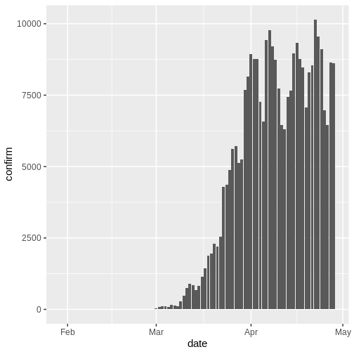
Distribuciones de retraso
Suponemos que hay retrasos desde el momento de la infección hasta el momento en que se notifica un caso. Especificamos estos retrasos como distribuciones para tener en cuenta la incertidumbre en las diferencias a nivel individual. El retraso puede consistir en múltiples tipos de retrasos/procesos. Un retraso típico desde el momento de la infección hasta la notificación del caso puede consistir en:
tiempo desde la infección hasta la aparición de los síntomas (el período de incubación) + tiempo desde el inicio de los síntomas hasta la notificación del caso (el tiempo de notificación).
La distribución del retraso para cada uno de estos procesos puede
estimarse a partir de los datos u obtenerse de la bibliografía. Podemos
expresar la incertidumbre sobre cuáles son los parámetros correctos de
las distribuciones, suponiendo que las distribuciones tienen parámetros
fijos (_fixed) o si tienen parámetros
variables (_variable). Para entender la
diferencia entre distribuciones fijas y
variables, consideremos el periodo de incubación.
Retrasos y datos
El número de retrasos y su tipo son una entrada flexible que depende de los datos. Los siguientes ejemplos muestran cómo se pueden especificar los retrasos para distintas fuentes de datos:
| Fuente de datos | Retraso(s) |
|---|---|
| Hora de inicio de los síntomas | Periodo de incubación |
| Hora del informe del caso | Periodo de incubación + tiempo desde el inicio de los síntomas hasta la notificación del caso |
| Tiempo de hospitalización | Periodo de incubación + tiempo desde el inicio de los síntomas hasta la hospitalización |
Distribución del periodo de incubación
La distribución del periodo de incubación de muchas enfermedades
suele obtenerse de la bibliografía. El paquete
{epiparameter} contiene una biblioteca de parámetros
epidemiológicos de distintas enfermedades obtenidos de la
literatura.
Especificamos una distribución gamma (fija) con media \(\mu = 4\) y desviación estándar \(\sigma= 2\) (forma = \(4\), escala = \(1\)) mediante la función
Gamma() de la siguiente manera:
R
incubation_period_fixed <- EpiNow2::Gamma(
mean = 4,
sd = 2,
max = 20
)
incubation_period_fixed
SALIDA
- gamma distribution (max: 20):
shape:
4
rate:
1El argumento max es el valor máximo que puede tomar la
distribución, en este ejemplo 20 días.
¿Por qué una distribución gamma?
El periodo de incubación debe tener un valor positivo. Por lo tanto, tenemos que especificar una distribución en EpiNow2 que sea sólo para valores positivos.
Gamma() admite distribuciones Gamma y
LogNormal() Distribuciones logarítmicas normales, que son
distribuciones sólo para valores positivos.
Para todos los tipos de retraso, tendremos que utilizar distribuciones sólo para valores positivos: ¡no queremos incluir retrasos de días negativos en nuestro análisis!
Incluyendo la incertidumbre de distribución
Para especificar una distribución variable, incluimos la incertidumbre en torno a la media \(\mu\) y la desviación estándar \(\sigma\) de nuestra distribución gamma. Si nuestra distribución del periodo de incubación tiene una media \(\mu\) y una desviación estándar \(\sigma\) entonces suponemos que la media (\(\mu\)) sigue una distribución Normal con desviación estándar \(\sigma_{\mu}\):
\[\mbox{Normal}(\mu,\sigma_{\mu}^2)\]
y una desviación estándar (\(\sigma\)) sigue una distribución Normal con desviación estándar \(\sigma_{\sigma}\):
\[\mbox{Normal}(\sigma,\sigma_{\sigma}^2).\]
Lo especificamos utilizando Normal() para cada
argumento: la media (\(\mu=4\) con
\(\sigma_{\mu}=0.5\)) y la desviación
estándar (\(\sigma=2\) con \(\sigma_{\sigma}=0.5\)).
R
incubation_period_variable <- EpiNow2::Gamma(
mean = EpiNow2::Normal(mean = 4, sd = 0.5),
sd = EpiNow2::Normal(mean = 2, sd = 0.5),
max = 20
)
incubation_period_variable
SALIDA
- gamma distribution (max: 20):
shape:
- normal distribution:
mean:
4
sd:
0.61
rate:
- normal distribution:
mean:
1
sd:
0.31Retrasos en los informes
Tras el periodo de incubación, habrá un retraso adicional desde el inicio de los síntomas hasta la notificación del caso: el retraso de notificación. Podemos especificarlo como una distribución fija o variable, o estimar una distribución a partir de los datos.
Al especificar una distribución, es útil visualizar la densidad de probabilidad para ver el pico y la dispersión de la distribución, en este caso utilizaremos una log normal logarítmica normal.
Si queremos suponer que la media del retraso en la notificación es de 2 días (con una desviación estándar de 1 día), escribimos:
Utilizando la media y la desviación estándar de la distribución log
normal, podemos especificar una distribución fija o variable utilizando
LogNormal() como antes:
R
reporting_delay_variable <- EpiNow2::LogNormal(
mean = EpiNow2::Normal(mean = 2, sd = 0.5),
sd = EpiNow2::Normal(mean = 1, sd = 0.5),
max = 10
)
Utilizando epiparameter::epidist() podemos crear una
distribución personalizada. La distribución log normal tendrá el
siguiente aspecto:
R
library(epiparameter)
R
epiparameter::epidist(
disease = "covid",
epi_dist = "reporting delay", # retraso del reporte
prob_distribution = "lnorm",
summary_stats = epiparameter::create_epidist_summary_stats(
mean = 2,
sd = 1
)
) %>%
plot()
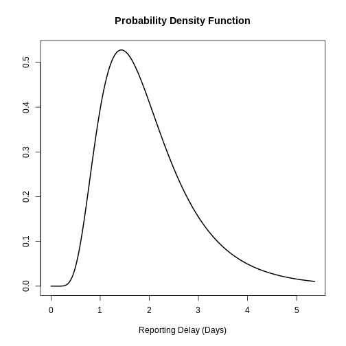
Podemos trazar distribuciones simples y combinadas generadas por
EpiNow2 utilizando plot(). Combinemos en un
gráfico el retraso desde la infección hasta la notificación, que incluye
el periodo de incubación y el retraso en la notificación:
R
plot(incubation_period_variable + reporting_delay_variable)
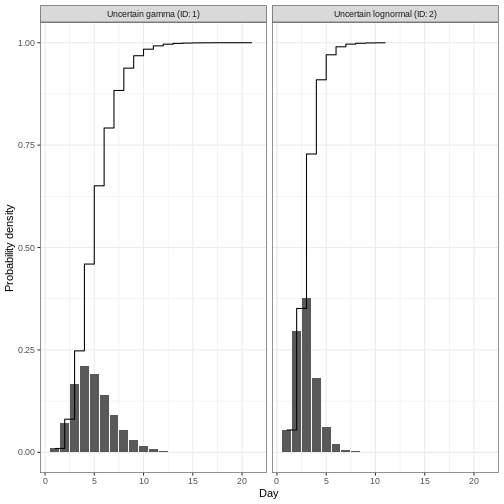
Aviso
Si disponemos de datos sobre el tiempo transcurrido entre el inicio
de los síntomas y la notificación, podemos utilizar la función
estimate_delay() para estimar una distribución log normal a
partir de un vector de retrasos. El siguiente código muestra cómo
utilizar estimate_delay() con datos sintéticos de
retrasos.
R
delay_data <- rlnorm(500, log(5), 1) # datos de retraso sintéticos
reporting_delay <- EpiNow2::estimate_delay(
delay_data,
samples = 1000,
bootstraps = 10
)
Tiempo de generación
También debemos especificar una distribución para el tiempo de generación. Aquí utilizaremos una distribución log normal con media 3.6 y desviación estándar 3.1 (Ganyani et al. 2020).
R
generation_time_variable <- EpiNow2::LogNormal(
mean = EpiNow2::Normal(mean = 3.6, sd = 0.5),
sd = EpiNow2::Normal(mean = 3.1, sd = 0.5),
max = 20
)
Estimaciones de hallazgos
La función epinow() es una envoltura de la función
estimate_infections() utilizada para estimar los casos por
fecha de infección. La distribución del tiempo de generación y las
distribuciones del retraso deben pasarse utilizando las funciones
generation_time_opts() y delay_opts()
respectivamente.
Hay muchas otras entradas que se pueden pasar a epinow()
ver ?EpiNow2::epinow() para más detalles. Una entrada
opcional es especificar una log normal para el número de
reproducción efectivo \(R_t\) al inicio
del brote. Especificamos una media de 2 días y una desviación estándar
de 2 días como argumentos de prior dentro de
rt_opts():
R
# define Rt prior distribution
rt_prior <- EpiNow2::rt_opts(prior = base::list(mean = 2, sd = 2))
Inferencia bayesiana con Stan
La inferencia bayesiana se realiza utilizando métodos MCMC con el
programa Stan. Hay una serie de
entradas por defecto para las funciones Stan, incluido el número de
cadenas y el número de muestras por cadena (ver
?EpiNow2::stan_opts()).
Para reducir el tiempo de cálculo, podemos ejecutar las cadenas en
paralelo. Para ello, debemos establecer el número de núcleos que se van
a utilizar. Por defecto, se ejecutan 4 cadenas MCMC (ver
stan_opts()$chains), por lo que podemos establecer un
número igual de núcleos para que se utilicen en paralelo de la siguiente
manera:
R
withr::local_options(base::list(mc.cores = 4))
Para averiguar el número máximo de núcleos disponibles en tu máquina,
utiliza parallel::detectCores().
Lista de verificación
Nota: En el siguiente código _fixed se
utilizan distribuciones en lugar de _variable
(distribuciones de retraso con incertidumbre). Esto se hace para
acelerar el tiempo de cálculo. En general, se recomienda utilizar
distribuciones variables que tengan en cuenta la incertidumbre
adicional.
R
# alternativas: distribuciones con parámetros fijos
generation_time_fixed <- EpiNow2::LogNormal(
mean = 3.6,
sd = 3.1,
max = 20
)
reporting_delay_fixed <- EpiNow2::LogNormal(
mean = 2,
sd = 1,
max = 10
)
Ahora estás listo para ejecutar EpiNow2::epinow() para
estimar el número de reproducción variable en el tiempo durante los
primeros 90 días:
R
reported_cases <- cases %>%
dplyr::slice_head(n = 90)
R
estimates <- EpiNow2::epinow(
# casos
data = reported_cases,
# retrasos
generation_time = EpiNow2::generation_time_opts(generation_time_fixed),
delays = EpiNow2::delay_opts(incubation_period_fixed + reporting_delay_fixed),
# prior
rt = rt_prior
)
SALIDA
WARN [2024-07-10 13:32:03] epinow: There were 1 divergent transitions after warmup. See
https://mc-stan.org/misc/warnings.html#divergent-transitions-after-warmup
to find out why this is a problem and how to eliminate them. -
WARN [2024-07-10 13:32:03] epinow: Examine the pairs() plot to diagnose sampling problems
- No esperes a que esto continúe
Para efectos de este tutorial, podemos utilizar opcionalmente
EpiNow2::stan_opts() para reducir el tiempo de cálculo.
Podemos especificar un número fijo de samples = 1000 y
chains = 3 al argumento stan de la función
EpiNow2::epinow(). Esperamos que esto lleve aproximadamente
3 minutos.
R
# puedes adicionar el argumento `stan`
EpiNow2::epinow(
...,
stan = EpiNow2::stan_opts(samples = 1000, chains = 3)
)
Recuerda: Utilizar un número adecuado de muestras y cadenas es crucial para garantizar la convergencia y obtener estimaciones fiables en los cálculos bayesianos con Stan. Los resultados más precisos se obtienen a costa de la velocidad.
Resultados
Podemos extraer y visualizar estimaciones del número de reproducción efectivo a lo largo del tiempo:
R
estimates$plots$R
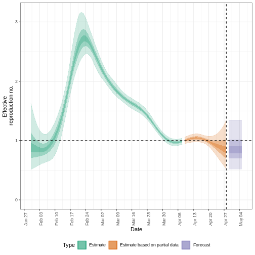
La incertidumbre de las estimaciones aumenta con el tiempo. Esto se debe a que las estimaciones se basan en datos del pasado, dentro de los periodos de retraso. Esta diferencia de incertidumbre se clasifica en Estimación (verde) utiliza todos los datos y Estimación basada en datos parciales (naranja) estimaciones que se basan en menos datos (porque es más probable que las infecciones que se produjeron en su momento no se hayan observado todavía), por este motivo, tienen intervalos cada vez más amplios hacia la fecha del último punto de datos. Por último, el Pronóstico (morado) es una proyección a futuro.
También podemos visualizar la estimación de la tasa de crecimiento a lo largo del tiempo:
R
estimates$plots$growth_rate
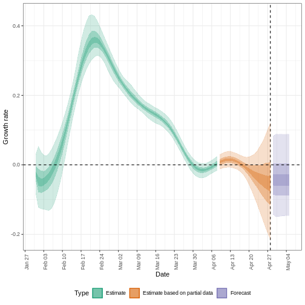
Para extraer un resumen de las métricas clave de transmisión en la última fecha de los datos:
R
summary(estimates)
SALIDA
measure estimate
<char> <char>
1: New infections per day 6164 (2854 -- 13890)
2: Expected change in daily reports Likely decreasing
3: Effective reproduction no. 0.84 (0.52 -- 1.3)
4: Rate of growth -0.052 (-0.21 -- 0.12)
5: Doubling/halving time (days) -13 (5.8 -- -3.2)Como estas estimaciones se basan en datos parciales, tienen un amplio intervalo de incertidumbre.
Del resumen de nuestro análisis se desprende que el cambio esperado en los casos diarios es de con la estimación de nuevos casos confirmados .
El número de reproducción efectivo \(R_t\) estimado (en la última fecha de los datos) es 0.84 (0.52 – 1.3).
La tasa de crecimiento exponencial del número de casos es -0.052 (-0.21 – 0.12).
El tiempo de duplicación (el tiempo que tarda en duplicarse el número de casos) es -13 (5.8 – -3.2).
Expected change in daily cases
Un factor que describe el cambio esperado en los casos diarios, basado en la probabilidad posterior de que \(R_t < 1\).
| Probabilidad (\(p\)) | Cambio esperado |
|---|---|
| \(p < 0,05\) | Aumentando |
| \(0,05 \leq p< 0,4\) | Probable aumento |
| 0,4 p< 0,6$ Estable | |
| 0,6 p < 0,95$ Probable disminución | |
| 0,95 p $ | En disminución |
Cuantificar la heterogeneidad geográfica
Los datos del brote del inicio de la pandemia COVID-19 del Reino Unido del paquete R incidence2 incluyen la región en la que se registraron los casos. Para encontrar estimaciones regionales del número de reproducción efectiva y de casos, debemos dar formato a los datos para que tengan tres columnas:
-
date: la fecha. -
region: la región. -
confirm: número de casos confirmados para una región en una fecha determinada.
R
regional_cases <- incidence2::covidregionaldataUK %>%
# usar {tidyr} para pre-procesar los valores faltantes
tidyr::replace_na(base::list(cases_new = 0)) %>%
# usar {incidence2} para convertir datos agregados en datos de incidencia
incidence2::incidence(
date_index = "date",
groups = "region",
counts = "cases_new",
count_values_to = "confirm",
date_names_to = "date",
complete_dates = TRUE
) %>%
dplyr::select(-count_variable)
# mantener las primeras 90 fechas para todas las regiones
# obtener el vector de las primeras 90 fechas
date_range <- regional_cases %>%
dplyr::distinct(date) %>%
# desde {incidence2}, las fechas ya están ordenadas en orden ascendente
dplyr::slice_head(n = 90) %>%
dplyr::pull(date)
# filtrar las fechas en la variable date_range
regional_cases <- regional_cases %>%
dplyr::filter(magrittr::is_in(x = date, table = date_range))
dplyr::as_tibble(regional_cases)
SALIDA
# A tibble: 1,170 × 3
date region confirm
<date> <chr> <dbl>
1 2020-01-30 East Midlands 0
2 2020-01-30 East of England 0
3 2020-01-30 England 2
4 2020-01-30 London 0
5 2020-01-30 North East 0
6 2020-01-30 North West 0
7 2020-01-30 Northern Ireland 0
8 2020-01-30 Scotland 0
9 2020-01-30 South East 0
10 2020-01-30 South West 0
# ℹ 1,160 more rowsPara hallar las estimaciones regionales, utilizamos los mismos datos
que epinow() para la función
regional_epinow():
R
estimates_regional <- EpiNow2::regional_epinow(
# casos
data = regional_cases,
# retrasos
generation_time = EpiNow2::generation_time_opts(generation_time_fixed),
delays = EpiNow2::delay_opts(incubation_period_fixed + reporting_delay_fixed),
# prior
rt = rt_prior
)
SALIDA
INFO [2024-07-10 13:32:09] Producing following optional outputs: regions, summary, samples, plots, latest
INFO [2024-07-10 13:32:09] Reporting estimates using data up to: 2020-04-28
INFO [2024-07-10 13:32:09] No target directory specified so returning output
INFO [2024-07-10 13:32:09] Producing estimates for: East Midlands, East of England, England, London, North East, North West, Northern Ireland, Scotland, South East, South West, Wales, West Midlands, Yorkshire and The Humber
INFO [2024-07-10 13:32:09] Regions excluded: none
INFO [2024-07-10 14:28:38] Completed regional estimates
INFO [2024-07-10 14:28:38] Regions with estimates: 13
INFO [2024-07-10 14:28:38] Regions with runtime errors: 0
INFO [2024-07-10 14:28:38] Producing summary
INFO [2024-07-10 14:28:38] No summary directory specified so returning summary output
INFO [2024-07-10 14:28:38] No target directory specified so returning timingsR
estimates_regional$summary$summarised_results$table
SALIDA
Region New infections per day
<char> <char>
1: East Midlands 347 (185 -- 621)
2: East of England 495 (270 -- 877)
3: England 3164 (1660 -- 5854)
4: London 289 (164 -- 485)
5: North East 244 (114 -- 478)
6: North West 501 (258 -- 876)
7: Northern Ireland 37 (16 -- 100)
8: Scotland 274 (105 -- 731)
9: South East 574 (295 -- 1072)
10: South West 467 (305 -- 732)
11: Wales 82 (48 -- 134)
12: West Midlands 201 (84 -- 465)
13: Yorkshire and The Humber 445 (228 -- 776)
Expected change in daily reports Effective reproduction no.
<fctr> <char>
1: Likely increasing 1.1 (0.79 -- 1.4)
2: Stable 1 (0.72 -- 1.3)
3: Likely decreasing 0.88 (0.59 -- 1.2)
4: Likely decreasing 0.89 (0.64 -- 1.2)
5: Likely decreasing 0.92 (0.6 -- 1.3)
6: Likely decreasing 0.86 (0.57 -- 1.2)
7: Likely decreasing 0.75 (0.45 -- 1.3)
8: Stable 0.94 (0.53 -- 1.7)
9: Stable 0.98 (0.65 -- 1.4)
10: Increasing 1.3 (1 -- 1.6)
11: Decreasing 0.69 (0.51 -- 0.93)
12: Likely decreasing 0.67 (0.38 -- 1.1)
13: Likely decreasing 0.93 (0.64 -- 1.3)
Rate of growth Doubling/halving time (days)
<char> <char>
1: 0.023 (-0.092 -- 0.13) 31 (5.5 -- -7.5)
2: -0.0036 (-0.13 -- 0.11) -190 (6.6 -- -5.5)
3: -0.044 (-0.18 -- 0.078) -16 (8.9 -- -3.9)
4: -0.032 (-0.14 -- 0.067) -22 (10 -- -5)
5: -0.024 (-0.17 -- 0.11) -29 (6.3 -- -4.2)
6: -0.046 (-0.18 -- 0.059) -15 (12 -- -3.9)
7: -0.074 (-0.23 -- 0.14) -9.4 (5.1 -- -3)
8: -0.013 (-0.2 -- 0.2) -53 (3.4 -- -3.5)
9: -0.0085 (-0.15 -- 0.12) -81 (5.8 -- -4.7)
10: 0.077 (-0.013 -- 0.17) 9 (4 -- -51)
11: -0.096 (-0.19 -- 0.0046) -7.2 (150 -- -3.7)
12: -0.11 (-0.28 -- 0.06) -6.1 (12 -- -2.5)
13: -0.028 (-0.16 -- 0.088) -25 (7.9 -- -4.4)R
estimates_regional$summary$plots$R
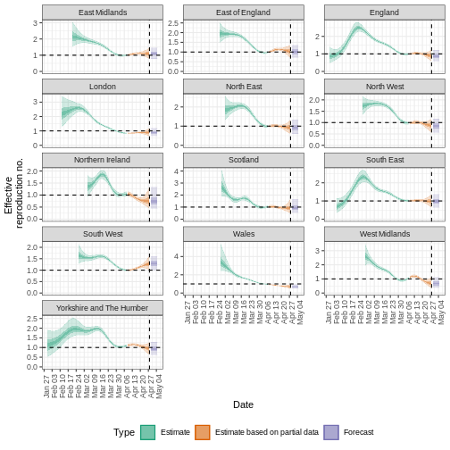
Resumen
EpiNow2 puede utilizarse para estimar las métricas de
transmisión a partir de los datos de casos en cualquier momento del
curso de un brote. La fiabilidad de estas estimaciones depende de la
calidad de los datos y de la elección adecuada de las distribuciones de
retraso. En el siguiente tutorial aprenderemos a hacer previsiones e
investigaremos algunas de las opciones adicionales de inferencia
disponibles en EpiNow2.
Content from Utilizar distribuciones de retraso en el análisis
Última actualización: 2024-07-06 | Mejora esta página
Hoja de ruta
Preguntas
- ¿Cómo reutilizar los retrasos almacenados en el paquete
{epiparameter}con mi flujo de análisis existente?
Objetivos
- Utilizar funciones de distribución para distribuciones continuas y
discretas almacenadas como objetos
<epidist>. - Convertir una distribución continua en discreta con
{epiparameter}. - Conectar las salidas de
{epiparameter}con entradas de EpiNow2.
Requisitos previos
- Completar el tutorial Cuantificar la transmisión
Este episodio requiere que estés familiarizado con:
Ciencia de datos : Programación básica con R.
Estadística : Distribuciones de probabilidad.
Teoría epidémica Parámetros epidemiológicos, periodos de tiempo, número reproductivo efectivo.
Introducción
{epiparameter} nos ayuda a elegir un conjunto
específico de parámetros epidemiológicos de la bibliografía, en lugar de
copiarlos/pegarlos a mano:
R
covid_serialint <-
epiparameter::epidist_db(
disease = "covid",
epi_dist = "serial",
author = "Nishiura",
single_epidist = TRUE
)
¡Ahora tenemos un parámetro epidemiológico que podemos utilizar en
nuestro análisis! En el bloque de abajo hemos sustituido uno de los
parámetros de estadísticas de resumen por
EpiNow2::LogNormal()
R
generation_time <-
EpiNow2::LogNormal(
mean = covid_serialint$summary_stats$mean, # replaced!
sd = covid_serialint$summary_stats$sd, # replaced!
max = 20
)
En este episodio, utilizaremos las funciones de
distribución que {epiparameter} proporciona para
obtener un valor máximo (max) para este y cualquier otro
paquete aguas abajo en tu flujo de análisis.
Carguemos los paquetes {epiparameter} y
EpiNow2. En EpiNow2 estableceremos 4
núcleos para utilizarlos en cálculos paralelos. Utilizaremos el operador
pipe %>%, algunos verbos de
dplyr y ggplot2, así que llamemos también
al paquete tidyverse:
R
library(epiparameter)
library(EpiNow2)
library(tidyverse)
withr::local_options(list(mc.cores = 4))
El doble punto
El doble punto :: en R te permite llamar a una función
específica de un paquete sin cargar todo el paquete en el entorno
actual.
Por ejemplo dplyr::filter(data, condition) utiliza
filter() del paquete dplyr.
Esto nos ayuda a recordar las funciones del paquete y a evitar conflictos con los nombres de las funciones.
Funciones de distribución
En R, todas las distribuciones estadísticas tienen funciones para acceder a lo siguiente:
-
density(): Función de densidad de probabilidad (PDF, por sus siglas en inglés), -
cdf(): Función de distribución acumulada (CDF, por sus siglas en inglés), -
quantile(): Cuantil y -
generate(): Generar valores aleatorios de la distribución dada.
Funciones para la distribución Normal
Si lo necesitas, ¡lee en detalle acerca de las funciones de probabilidad de R para la distribución normal, cada una de sus definiciones e identifica en qué parte de una distribución se encuentran!
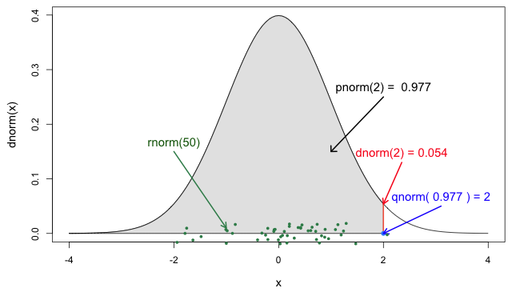
Si consultas ?stats::Distributions, cada tipo de
distribución tiene un conjunto único de funciones. Sin embargo,
¡{epiparameter} te ofrece las mismas cuatro funciones para
acceder a cada uno de los valores anteriores para cualquier objeto
<epidist> que quieras!
R
# Grafica esto para tener una imagen de referencia
plot(covid_serialint, day_range = 0:20)
R
# El valor de densidad cuando el cuantil tiene un valor de 10 (días)
density(covid_serialint, at = 10)
SALIDA
[1] 0.01911607R
# La probabilidad acumulada cuando el cuantil tiene un valor de 10 (días)
cdf(covid_serialint, q = 10)
SALIDA
[1] 0.9466605R
# El valor del cuantil (día) cuando la probabilidad acumulada es 60%
quantile(covid_serialint, p = 0.6)
SALIDA
[1] 4.618906R
# Generar 10 valores aleatorios (días) dada una familia de distribuciones y
# sus parámetros
generate(covid_serialint, times = 10)
SALIDA
[1] 8.077188 1.490756 1.935450 2.168772 2.717945 2.511318 1.543616 1.617303
[9] 5.343381 5.739607Ventana para el rastreo de contactos y el intervalo en serie
El intervalo serial es importante en la optimización del rastreo de contactos, ya que proporciona una ventana temporal para la contención de la propagación de una enfermedad (Fine, 2003). A partir del intervalo serial, podemos evaluar la necesidad de ampliar el número de días previos a tener en cuenta para iniciar el rastreo de contactos e incluir más contactos retrospectivos (Davis et al., 2020).
Con el intervalo de serie COVID-19 (covid_serialint)
calcula:
- ¿Cuántos más casos atrasados se podrían captar si el método de rastreo de contactos considerara los contactos de hasta 6 días antes del inicio en comparación con los de 2 días antes del inicio?
En la Figura 5 de las funciones
de probabilidad de R para la distribución normal, la sección
sombreada representa una probabilidad acumulada de 0.997
para el valor del cuantil en x = 2.
R
plot(covid_serialint)
R
cdf(covid_serialint, q = 2)
SALIDA
[1] 0.1111729R
cdf(covid_serialint, q = 6)
SALIDA
[1] 0.7623645Dado el intervalo de serie COVID-19:
Un método de rastreo de contactos que considere los contactos hasta 2 días antes del inicio captará alrededor del 11,1% de los casos retrospectivos.
Si este periodo se amplía a 6 días antes del inicio, se podría incluir el 76,2% de los contactos retrospectivos.
intercambiamos la pregunta entre días y probabilidad acumulada a:
- Al considerar los casos secundarios, ¿cuántos días después del inicio de los síntomas de los casos primarios podemos esperar que se produzca un 55% de inicio de los síntomas?
R
quantile(covid_serialint, p = 0.55)
Una interpretación podría ser
- El 55% del inicio de los síntomas de los casos secundarios ocurrirá después de 4,2 días del inicio de los síntomas de los casos primarios.
Discretizar una distribución continua
¡Nos acercamos al final! EpiNow2::LogNormal() todavía
necesita un valor máximo (max).
Una forma de hacerlo es obtener el valor del cuantil del percentil 99
de la distribución o la probabilidad acumulada de 0.99 .
Para ello, necesitamos acceder al conjunto de funciones de distribución
de nuestro objeto <epidist>.
Podemos utilizar el conjunto de funciones de distribución de una
distribución continua (como arriba). Sin embargo, estos valores
serán continuos. Podemos discretizar la
distribución continua almacenada en nuestro objeto
<epidist> para obtener valores discretos a partir de
una distribución continua.
Cuando usamos epiparameter::discretise() sobre la
distribución continua, obtenemos una distribución
discreta (o discretizada):
R
covid_serialint_discrete <-
epiparameter::discretise(covid_serialint)
covid_serialint_discrete
SALIDA
Disease: COVID-19
Pathogen: SARS-CoV-2
Epi Distribution: serial interval
Study: Nishiura H, Linton N, Akhmetzhanov A (2020). "Serial interval of novel
coronavirus (COVID-19) infections." _International Journal of
Infectious Diseases_. doi:10.1016/j.ijid.2020.02.060
<https://doi.org/10.1016/j.ijid.2020.02.060>.
Distribution: discrete lnorm
Parameters:
meanlog: 1.386
sdlog: 0.568Identificamos este cambio en la línea de salida
Distribution: del objeto <epidist>.
Comprueba de nuevo esta línea:
Distribution: discrete lnormMientras que para una distribución continua trazamos la Función de densidad de probabilidad (PDF) para una distribución discreta, trazamos la función de masa de probabilidad (PMF):
R
# continua
plot(covid_serialint)
# discreta
plot(covid_serialint_discrete)
Para obtener finalmente un valor máximo (max), accedamos
al valor del cuantil del percentil 99 o cuando la probabilidad acumulada
es 0.99 usando prob_dist$q de forma similar a
como accedemos a los valores de estadísticas de resumen
(summary_stats).
R
covid_serialint_discrete_max <-
quantile(covid_serialint_discrete, p = 0.99)
Duración del periodo de cuarentena e incubación
El periodo de incubación es un retraso útil para evaluar la duración de la vigilancia activa o la cuarentena (Lauer et al., 2020). Del mismo modo, los retrasos desde la aparición de los síntomas hasta la recuperación (o la muerte) determinarán la duración necesaria de la asistencia sanitaria y el aislamiento del caso (Cori et al., 2017).
Calcula:
- ¿En qué plazo exacto de tiempo el 99% de las personas que presentan síntomas de COVID-19 después de la infección los presentan?
¿Qué distribución del retraso mide el tiempo entre la infección y la aparición de los síntomas?
¡Las funciones de probabilidad discretas para
<epidist> son las mismas que utilizamos para las
continuas!
R
# Grafica esto para tener una imagen de referencia
plot(covid_serialint_discrete, day_range = 0:20)
# El valor de la densidad cuando el cuantil tiene un valor de 10 (días)
density(covid_serialint_discrete, at = 10)
# La probabilidad acumulada cuando el cuantil tiene un valor de 10 (días)
cdf(covid_serialint_discrete, q = 10)
# El valor del cuantil (días) cuando la probabilidad acumulada es 60%
quantile(covid_serialint_discrete, p = 0.6)
# Generar valores aleatorios
generate(covid_serialint_discrete, times = 10)
R
covid_incubation <-
epiparameter::epidist_db(
disease = "covid",
epi_dist = "incubation",
single_epidist = TRUE
)
SALIDA
Using Linton N, Kobayashi T, Yang Y, Hayashi K, Akhmetzhanov A, Jung S, Yuan
B, Kinoshita R, Nishiura H (2020). "Incubation Period and Other
Epidemiological Characteristics of 2019 Novel Coronavirus Infections
with Right Truncation: A Statistical Analysis of Publicly Available
Case Data." _Journal of Clinical Medicine_. doi:10.3390/jcm9020538
<https://doi.org/10.3390/jcm9020538>..
To retrieve the citation use the 'get_citation' functionR
covid_incubation_discrete <- epiparameter::discretise(covid_incubation)
quantile(covid_incubation_discrete, p = 0.99)
SALIDA
[1] 19El 99% de los que desarrollan síntomas de COVID-19 lo harán en los 16 días posteriores a la infección.
Ahora, ¿es esperable este resultado en términos epidemiológicos?
A partir de un valor máximo con quantile() podemos crear
una secuencia de valores de cuantiles como un vector numérico y calcular
density() para cada uno:
R
# Crear la visualización para una distribución discreta
# a partir de un valor máximo de la distribución
quantile(covid_serialint_discrete, p = 0.99) %>%
# Generar un vector de cuantiles
# como una secuencia para cada número natural
seq(1L, to = ., by = 1L) %>%
# Convertir el vector numérico en un data.frame (tibble)
as_tibble_col(column_name = "quantile_values") %>%
mutate(
# Calcular los valores de densidad
# para cada cuantul en la función de densidad
density_values =
density(
x = covid_serialint_discrete,
at = quantile_values
)
) %>%
# Graficar
ggplot(
aes(
x = quantile_values,
y = density_values
)
) +
geom_col()
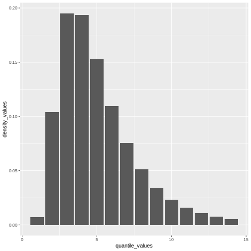
Recuerda: En las infecciones con transmisión presintomática, los intervalos seriales pueden tener valores negativos (Nishiura et al., 2020). ¡Cuando utilizamos el intervalo serial para aproximar el tiempo de generación necesitamos hacer esta distribución sólo con valores positivos!
Plug-in {epiparameter} a {EpiNow2}
¡Ahora podemos introducirlo todo en la función
EpiNow2::LogNormal()!
- Las estadísticas de resumen: media
(
mean) y desviación estándar (sd) de la distribución, - un valor máximo (
max), - el nombre de la distribución (
distribution).
Cuando utilices EpiNow2::LogNormal() para definir una
distribución log normal como la del intervalo serial
del COVID-19 (covid_serialint) podemos especificar la media
(mean) y la desviación estándar (sd) como
parámetros. Alternativamente, para obtener los parámetros “naturales” de
una distribución log normal podemos convertir sus estadísticos de
resumen en parámetros de distribución denominados meanlog y
sdlog. Con {epiparameter} podemos obtener
directamente los parámetros de la distribución utilizando
epiparameter::get_parameters():
R
covid_serialint_parameters <-
epiparameter::get_parameters(covid_serialint)
Entonces, tenemos:
R
serial_interval_covid <-
EpiNow2::LogNormal(
meanlog = covid_serialint_parameters["meanlog"],
sdlog = covid_serialint_parameters["sdlog"],
max = covid_serialint_discrete_max
)
serial_interval_covid
SALIDA
- lognormal distribution (max: 14):
meanlog:
1.4
sdlog:
0.57Suponiendo un escenario con COVID-19, utilicemos los primeros 60 días
del conjunto de datos example_confirmed del paquete
EpiNow2 como casos
reportados(reported_cases) y el recientemente creado
intervalo serial COVID (serial_interval_covid) como
entradas para estimar el número reproductivo variable en el tiempo
utilizando EpiNow2::epinow().
R
epinow_estimates_cg <- epinow(
# casos
data = example_confirmed[1:60],
# retrasos
generation_time = generation_time_opts(serial_interval_covid)
)
base::plot(epinow_estimates_cg)
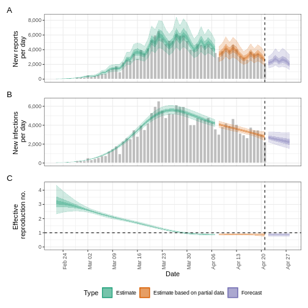
plot() incluye los casos estimados por fecha de
infección, que se reconstruyen a partir de los casos notificados y los
retrasos.
Advertencia
Utilizar el intervalo serial en lugar del tiempo de generación es una alternativa que puede propagar sesgos en tus estimaciones, más aún en enfermedades con transmisión presintomática reportada. (Chung Lau et al., 2021)
Ajuste por retrasos en la notificación
Estimar \(R_t\) requiere datos sobre el número diario de nuevas infecciones. Debido a los retrasos en el desarrollo de cargas víricas detectables, la aparición de síntomas, la búsqueda de atención sanitaria y la notificación, estas cifras no están fácilmente disponibles. Todas las observaciones reflejan eventos de transmisión de algún momento del pasado. En otras palabras, si \(d\) es el tiempo transcurrido desde la infección hasta la observación, las observaciones en el momento \(t\) informan a \(R_{t−d}\) no \(R_t\). (Gostic et al., 2020)
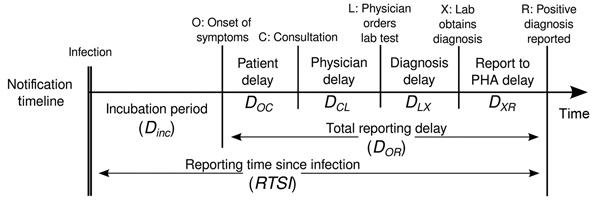
La distribución del retraso podría inferirse
conjuntamente con los tiempos de infección subyacentes o estimarse como
la suma del periodo de
incubación y la distribución de los retrasos desde el inicio de los
síntomas hasta la observación a partir de los datos (retraso en la notificación). En
EpiNow2 podemos especificar estas dos distribuciones de
retraso complementarias con el argumento delays.

Utiliza un periodo de incubación de COVID-19 para estimar Rt
Estima el número reproductivo variable en el tiempo para los primeros
60 días del conjunto de datos example_confirmed de
EpiNow2. Accede a un periodo de incubación para COVID-19
a partir de {epiparameter} para utilizarlo como retraso de
notificación.
Utiliza el último cálculo de epinow() usando el
argumento delays y la función auxiliar
delay_opts().
El argumento delays y la función auxiliar
delay_opts() son análogos al argumento
generation_time y la función auxiliar
generation_time_opts().
R
epinow_estimates <- epinow(
# casos
reported_cases = example_confirmed[1:60],
# retrasos
generation_time = generation_time_opts(covid_serial_interval),
delays = delay_opts(covid_incubation_time)
)
R
# Tiempo de generación ---------------------------------------------------------
# Intervalo serial covid
covid_serialint <-
epiparameter::epidist_db(
disease = "covid",
epi_dist = "serial",
author = "Nishiura",
single_epidist = TRUE
)
# adaptar epidist para epinow2
covid_serialint_discrete_max <- covid_serialint %>%
epiparameter::discretise() %>%
quantile(p = 0.99)
covid_serialint_parameters <-
epiparameter::get_parameters(covid_serialint)
covid_serial_interval <-
EpiNow2::LogNormal(
meanlog = covid_serialint_parameters["meanlog"],
sdlog = covid_serialint_parameters["sdlog"],
max = covid_serialint_discrete_max
)
# Periodo de incubación -------------------------------------------------------
# Periodo de incubación
covid_incubation <- epiparameter::epidist_db(
disease = "covid",
epi_dist = "incubation",
author = "Natalie",
single_epidist = TRUE
)
# Adaptar epiparameter para epinow2
covid_incubation_discrete_max <- covid_incubation %>%
epiparameter::discretise() %>%
quantile(p = 0.99)
covid_incubation_parameters <-
epiparameter::get_parameters(covid_incubation)
covid_incubation_time <-
EpiNow2::LogNormal(
meanlog = covid_incubation_parameters["meanlog"],
sdlog = covid_incubation_parameters["sdlog"],
max = covid_incubation_discrete_max
)
# epinow ------------------------------------------------------------------
# usar epinow
epinow_estimates_cgi <- epinow(
# casos
data = example_confirmed[1:60],
# retrasos
generation_time = generation_time_opts(covid_serial_interval),
delays = delay_opts(covid_incubation_time)
)
SALIDA
WARN [2024-07-06 08:23:53] epinow: There were 2 divergent transitions after warmup. See
https://mc-stan.org/misc/warnings.html#divergent-transitions-after-warmup
to find out why this is a problem and how to eliminate them. -
WARN [2024-07-06 08:23:53] epinow: Examine the pairs() plot to diagnose sampling problems
- R
base::plot(epinow_estimates_cgi)
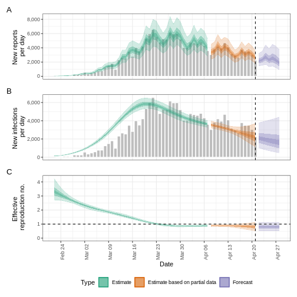
Intenta complementar el argumento delays con un retraso
de notificación como el objeto reporting_delay_fixed del
episodio anterior.
¿Cuánto ha cambiado?
Tras añadir el periodo de incubación, debata acerca de:
- ¿Cambia la tendencia del ajuste del modelo en la sección estimación (“Estimate”)?
- ¿Ha cambiado la incertidumbre?
- ¿Cómo explicaría o interpretaría estos cambios?
Compara todas las figuras generadas con EpiNow2 anteriormente.
Desafíos
Un consejo para completar código
Si escribimos el [ ] luego del objeto
covid_serialint_parameters[ ], dentro de [ ]
podemos utilizar el la tecla Tab en el teclado ↹ para usar la
función
de completado de código
Usar esto permite acceder rápidamente a
covid_serialint_parameters["meanlog"] y
covid_serialint_parameters["sdlog"].
¡Te invitamos a probarlo en otros bloques de código y en la consola de R!
Número de reproducción efectiva del ébola ajustado por retrasos en la notificación
Descarga y lee el conjunto de datos de ébola:
- Estime el número reproductivo efectivo utilizando EpiNow2
- Ajuste la estimación según los retrasos de notificación disponibles
en
{epiparameter} - ¿Por qué eligió ese parámetro?
Para calcular el \(R_t\) utilizando EpiNow2 necesitamos
- Los datos de incidencia agregada con los casos confirmados por día, y
- La distribución del tiempo de generación.
- Opcionalmente, informar las distribuciones de retrasos cuando estén disponibles (por ejemplo, el periodo de incubación).
Para obtener las distribuciones de retrasos utilizando
{epiparameter} podemos utilizar funciones como:
epiparameter::epidist_db()epiparameter::parameter_tbl()discretise()quantile()
R
# Leer datos
# e.j.: Si la ruta al archivo es data/raw-data/ebola_cases.csv entonces:
ebola_confirmed <-
read_csv(here::here("data", "raw-data", "ebola_cases.csv"))
# Listar las distribuciones
epiparameter::epidist_db(disease = "ebola") %>%
epiparameter::parameter_tbl()
R
# Tiempo de generación ---------------------------------------------------------
# Filtrar una distribución para el tiempo de generación
ebola_serial <- epiparameter::epidist_db(
disease = "ebola",
epi_dist = "serial",
single_epidist = TRUE
)
# adaptar epiparameter para epinow2
ebola_serial_discrete <- epiparameter::discretise(ebola_serial)
serial_interval_ebola <-
EpiNow2::Gamma(
mean = ebola_serial$summary_stats$mean,
sd = ebola_serial$summary_stats$sd,
max = quantile(ebola_serial_discrete, p = 0.99)
)
# Tiempo de incubación -------------------------------------------------------
# Filtrar una distribución para el retraso del periodo de incubación
ebola_incubation <- epiparameter::epidist_db(
disease = "ebola",
epi_dist = "incubation",
single_epidist = TRUE
)
# adaptar epiparameter para epinow2
ebola_incubation_discrete <- epiparameter::discretise(ebola_incubation)
incubation_period_ebola <-
EpiNow2::Gamma(
mean = ebola_incubation$summary_stats$mean,
sd = ebola_incubation$summary_stats$sd,
max = quantile(ebola_serial_discrete, p = 0.99)
)
# epinow ------------------------------------------------------------------
# Usar epinow
epinow_estimates_egi <- epinow(
# casos
data = ebola_confirmed,
# retrasos
generation_time = generation_time_opts(serial_interval_ebola),
delays = delay_opts(incubation_period_ebola)
)
SALIDA
WARN [2024-07-06 08:26:30] epinow: There were 3 divergent transitions after warmup. See
https://mc-stan.org/misc/warnings.html#divergent-transitions-after-warmup
to find out why this is a problem and how to eliminate them. -
WARN [2024-07-06 08:26:30] epinow: Examine the pairs() plot to diagnose sampling problems
- R
plot(epinow_estimates_egi)
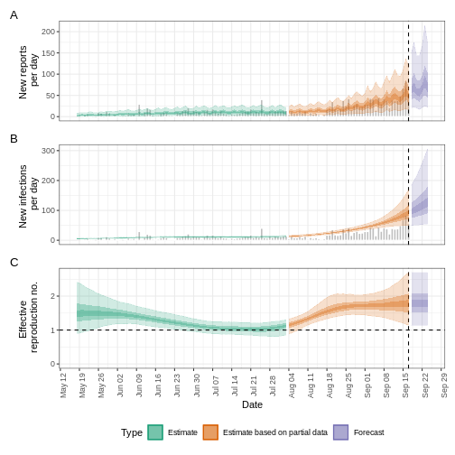
¿Qué hacer con las distribuciones de Weibull?
Utiliza el conjunto de datos
influenza_england_1978_school del paquete
outbreaks para calcular el número reproductivo efectivo
mediante EpiNow2, ajustando por los retrasos de
notificación disponibles en {epiparameter}.
EpiNow2::NonParametric() acepta Funciones de Masa de
Probabilidad (PMF) de cualquier familia de distribuciones. Lee la guía
de referencia sobre Distribuciones
de probabilidad.
R
# ¿Qué parámetros hay disponibles para Influenza?
epiparameter::epidist_db(disease = "influenza") %>%
epiparameter::parameter_tbl() %>%
count(epi_distribution)
SALIDA
# Parameter table:
# A data frame: 3 × 2
epi_distribution n
<chr> <int>
1 generation time 1
2 incubation period 15
3 serial interval 1R
# Tiempo de generación -------------------------------------------------------
# Leer tiempo de generación
influenza_generation <-
epiparameter::epidist_db(
disease = "influenza",
epi_dist = "generation"
)
influenza_generation
SALIDA
Disease: Influenza
Pathogen: Influenza-A-H1N1
Epi Distribution: generation time
Study: Lessler J, Reich N, Cummings D, New York City Department of Health and
Mental Hygiene Swine Influenza Investigation Team (2009). "Outbreak of
2009 Pandemic Influenza A (H1N1) at a New York City School." _The New
England Journal of Medicine_. doi:10.1056/NEJMoa0906089
<https://doi.org/10.1056/NEJMoa0906089>.
Distribution: weibull
Parameters:
shape: 2.360
scale: 3.180R
# EpiNow2 permite usar distribuciones Gamma o LogNormal
# Se puede introducir una PMF
influenza_generation_discrete <-
epiparameter::discretise(influenza_generation)
influenza_generation_max <-
quantile(influenza_generation_discrete, p = 0.99)
influenza_generation_pmf <-
density(
influenza_generation_discrete,
at = 1:influenza_generation_max
)
influenza_generation_pmf
SALIDA
[1] 0.06312336 0.22134988 0.29721220 0.23896828 0.12485164 0.04309454R
# EpiNow2::NonParametric() también puede recibir valores de PMF
generation_time_influenza <-
EpiNow2::NonParametric(
pmf = influenza_generation_pmf
)
# Periodo de incubación -------------------------------------------------------
# Leer el periodo de incubación
influenza_incubation <-
epiparameter::epidist_db(
disease = "influenza",
epi_dist = "incubation",
single_epidist = TRUE
)
# Discretizar el periodo de incubación
influenza_incubation_discrete <-
epiparameter::discretise(influenza_incubation)
influenza_incubation_max <-
quantile(influenza_incubation_discrete, p = 0.99)
influenza_incubation_pmf <-
density(
influenza_incubation_discrete,
at = 1:influenza_incubation_max
)
influenza_incubation_pmf
SALIDA
[1] 0.05749151 0.16687705 0.22443092 0.21507632 0.16104546 0.09746609 0.04841928R
# EpiNow2::NonParametric() también puede recibit valores de PMF
incubation_time_influenza <-
EpiNow2::NonParametric(
pmf = influenza_incubation_pmf
)
# epinow ------------------------------------------------------------------
# Leer datos
influenza_cleaned <-
outbreaks::influenza_england_1978_school %>%
select(date, confirm = in_bed)
# Usar epinow
epinow_estimates_igi <- epinow(
# casos
data = influenza_cleaned,
# retrasos
generation_time = generation_time_opts(generation_time_influenza),
delays = delay_opts(incubation_time_influenza)
)
SALIDA
WARN [2024-07-06 08:26:38] epinow: There were 2 divergent transitions after warmup. See
https://mc-stan.org/misc/warnings.html#divergent-transitions-after-warmup
to find out why this is a problem and how to eliminate them. -
WARN [2024-07-06 08:26:38] epinow: Examine the pairs() plot to diagnose sampling problems
- R
plot(epinow_estimates_igi)
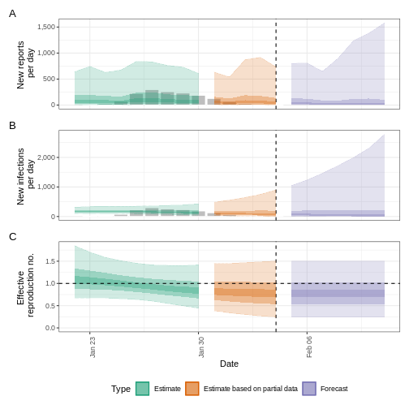
Próximos pasos
¿Cómo obtener parámetros de distribución a partir de distribuciones estadísticas?
¿Cómo obtener la media y la desviación típica de un tiempo de
generación con sólo parámetros de distribución pero sin
estadísticas de resumen como mean o sd para
EpiNow2::Gamma() o EpiNow2::LogNormal()?
¡Mira en {epiparameter} la viñeta extracción
y conversión de parámetros y sus casos
de uso !
¿Cómo estimar las distribuciones de retraso de la Enfermedad X?
Consulta este excelente tutorial sobre la estimación del intervalo serial y el período de incubación de la Enfermedad X, teniendo en cuenta la censura por medio de inferencia bayesiana con paquetes como rstan y coarseDataTools.
- Tutorial en Inglés: https://rpubs.com/tracelac/diseaseX
- Tutorial en Español: https://epiverse-trace.github.io/epimodelac/EnfermedadX.html
Luego, después de obtener tus valores estimados,
¡puedes crear manualmente tus propios objetos con clase
<epidist> por medio de
epiparameter::epidist()! Echa un vistazo a su guía
de referencia sobre “Crear un objeto <epidist>”
¡!
Por último, echa un vistazo al último paquete de R
{epidist} que proporciona métodos para abordar los
principales retos de la estimación de distribuciones, como el
truncamiento, la censura por intervalos y los sesgos dinámicos.
Puntos Clave
- Utilizar funciones de distribución con
<epidist>para obtener estadísticas de resumen y parámetros informativos de las intervenciones de salud pública, como la Ventana de rastreo de contactos y la Duración de la cuarentena. - Utilizar
discretise()para convertir distribuciones de retraso continuas en discretas. - Utilizar
{epiparameter}para obtener los retrasos de información necesarios en las estimaciones de transmisibilidad.
Content from Estimación de la severidad del brote
Última actualización: 2024-07-08 | Mejora esta página
Hoja de ruta
Preguntas
¿Por qué estimamos la gravedad clínica de una epidemia?
¿Cómo se puede estimar la probabilidad de muerte (CFR por sus siglas en inglés: Case Fatality Risk) al principio de una epidemia en curso?
Objetivos
Estimar la probabilidad de muerte a partir de datos de casos agregados utilizando el paquete cfr, case fatality risk en inglés (riesgo de fatalidad de casos).
Estima la probabilidad de muerte, ajustando este cálculo teniendo en cuenta el intervalo entre la aparición de síntomas y la muerte del paciente utilizando los paquetes
{epiparameter}y cfr.Estima la probabilidad de muerte de una enfermedad durante la fase de crecimiento exponencial de una epidemia en expansión utilizando cfr.
Requisitos previos
Este episodio requiere que estés familiarizado con
Ciencia de datos Programación básica con R
Teoría epidémica: Distribuciones temporales.
Introducción
Entre las preguntas más comunes en la fase inicial de una epidemia se incluyen:
- ¿Cuál es el impacto probable del brote en la salud pública en términos de gravedad clínica?
- ¿Cuáles son los grupos más gravemente afectados?
- ¿Tiene el brote potencial para causar una epidemia de grandes dimensiones o incluso una pandemia?
Podemos evaluar el potencial pandémico de una epidemia con dos medidas críticas: la transmisibilidad y la gravedad clínica (Fraser et al., 2009, CDC, 2016).
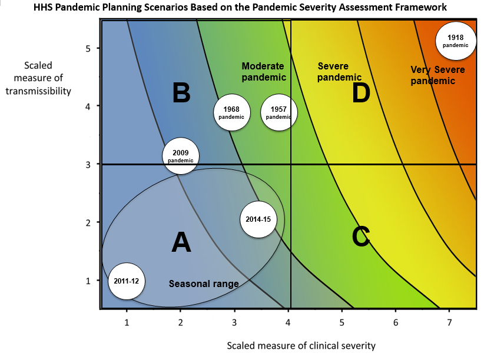
Un enfoque epidemiológico para estimar la gravedad clínica consiste en cuantificar la probabilidad de muerte (CFR). CFR es la probabilidad condicional de muerte una vez confirmado el diagnóstico de la enfermedad, calculada como el número acumulado de muertes por una enfermedad infecciosa dividido por el número de casos diagnosticados confirmados. Sin embargo, calcularlo directamente durante el curso de una epidemia tiende a dar como resultado un CFR sesgado, dado el intervalo temporal que ocurre desde el inicio de lo síntomas hasta la muerte. Este retraso temporal varía sustancialmente a medida que avanza la epidemia y se estabiliza en las últimas fases del brote (Ghani et al., 2005).
![Estimaciones sesgadas de la probabilidad de muerte como función del tiempo (línea gruesa), calculado como el número acumulado de muertes dividido por el número de casos confirmados en el tiempo t. La estimación de la probabilidad de muerte al final de un brote (~30 de mayo) corresponde con la probabilidad de muerte verdadera. La línea continua horizontal y las líneas de puntos muestran el valor esperado y los intervalos de confianza del 95% (95% IC) de la predicción de la probabilidad de muerte ajustada al retraso temporal entre el periodo inicial de síntomas y muerte , utilizando los datos observados hasta el 27 de Marzo de 2003 (Nishiura et al., 2009)](fig/cfr-pone.0006852.g003-fig_c.png)
En términos más generales, estimar la gravedad puede ser útil incluso fuera de un escenario de planificación pandémica y en el contexto de la salud pública rutinaria. Saber si un brote tiene o tuvo una gravedad diferente a la del registro histórico puede motivar investigaciones causales, que podrían ser intrínsecas al agente infeccioso (por ejemplo, una nueva cepa más grave) o debidas a factores subyacentes en la población (por ejemplo, inmunidad reducida o factores de morbilidad) (Lipsitch et al., 2015).
En este tutorial vamos a aprender a utilizar la función
cfr para calcular y ajustar una estimación de la
probabilidad de muerte utilizando distribuciones temporales
provenientes de {epiparameter} o de otras fuentes,
basándose en los métodos desarrollados por Nishiura
et al., 2009 además, aprenderemos como reimplementar las funciones
de cfr para realizar otras mediciones de la gravedad de
la enfermedad, por ejemplo, el riesgo de fatalidad hospitalaria.
Utilizaremos el operador %>% para conectar funciones,
por lo que es necesario también acceder al
paquetetidyverse:
R
library(cfr)
library(epiparameter)
library(tidyverse)
library(outbreaks)
El doble punto
El doble punto :: en R te permite llamar a una función
específica de un paquete sin cargar todo el paquete en el entorno
actual.
Por ejemplo dplyr::filter(data, condition) utiliza
filter() del paquete dplyr.
Esto nos ayuda a recordar las funciones requeridas y evitar usar funciones que fueron creadas con el mismo nombre pero provienen de otros paquetes.
Fuentes de datos para la gravedad clínica
¿Qué fuentes de datos podemos utilizar para estimar la gravedad clínica de un brote epidémico? Verity et al., 2020 resume el espectro de casos de COVID-19:

- En la cúspide de la pirámide, los que cumplían los criterios de caso de la OMS para grave o críticos, identificados en el ámbito hospitalario, presentando una neumonía vírica atípica. Estos casos se habrían identificado en China continental y entre los categorizados internacionalmente como de transmisión local.
- Es probable que haya muchos más casos sintomáticos (es decir, con fiebre, tos o mialgia) pero no requiriesen hospitalización. Estos casos se habrían identificado mediante el rastro de casos potenciales en vuelos internacionales a zonas de alto riesgo y mediante el rastreo de los contactos de los casos confirmados, o a través de vigilancia pasiva de otras enfermedades infecciosas respiratorias en la población.
- La parte inferior de la pirámide representa enfermedad leve (y posiblemente asintomática). Estos casos podrían identificarse mediante el rastreo de contactos, mediante pruebas serológicas.
CFR no ajustado
Medimos la gravedad de la enfermedad en términos de riesgo/probabilidad de muerte (CFR). CFR se interpreta como la probabilidad condicional de muerte dado un diagnóstico confirmado, calculada como el número acumulado de muertes \(D_{t}\) sobre el número acumulado de casos confirmados \(C_{t}\) en un momento determinado \(t\). Podemos referirnos al CFR sesgado (\(b_{t}\)):
\[ b_{t} = \frac{D_{t}}{C_{t}} \]
Este cálculo es sesgado porque genera una subestimación del CFR real, debido al retraso temporal desde el inicio de los síntomas hasta la muerte, que sólo se estabiliza en las últimas fases del brote.
Para calcular el CFR de forma directa y sin ajustar el retraso temporal entre la aparición de síntomas y la muerte del paciente (conocida como probabilidad de muerte “naive”), el paquete cfr requiere un una base de datos (dataframe) que contenga las siguientes tres columnas:
datecasesdeaths
Exploremos la base de datos ebola1976 incluido en {cfr}
que procede del primer brote de ébola en lo que entonces se llamaba
Zaire (ahora República Democrática del Congo) en 1976, analizado por
Camacho et al. (2014).
R
# Cargamos la base de datos Ebola 1976, incluida en el paquete {cfr}
data("ebola1976")
# Asumiendo que solo tenemos datos para los primeros 30 días del brote
ebola1976 %>%
slice_head(n = 30) %>%
as_tibble()
SALIDA
# A tibble: 30 × 3
date cases deaths
<date> <int> <int>
1 1976-08-25 1 0
2 1976-08-26 0 0
3 1976-08-27 0 0
4 1976-08-28 0 0
5 1976-08-29 0 0
6 1976-08-30 0 0
7 1976-08-31 0 0
8 1976-09-01 1 0
9 1976-09-02 1 0
10 1976-09-03 1 0
# ℹ 20 more rowsNecesitamos datos de incidencia agregados
cfr lee datos de incidencia agregados por día
Estos deben ser agregados por día, es decir, cada fila de la base de datos contiene el número diario de casos y muertes notificadas. También deben incluirse aquellos días que tengan valores nulos o ausentes, de forma similar a los datos de series temporales.
cfr requiere datos diarios y no puede considerar otras unidades temporales de agregación, como semanas o meses.
Utilizando la función cfr_static() directamente,
calculamos la probabilidad de muerte sin ajustar:
R
# Cálculo de la probabilidad de muerte sin ajustar durante los primeros 30 días
cfr::cfr_static(data = ebola1976 %>% slice_head(n = 30))
SALIDA
severity_estimate severity_low severity_high
1 0.4740741 0.3875497 0.5617606Desafío
Descarga el archivo sarscov2_casos_defunciones.csv y léelo en R.
Estima la probabilidad de muerte sin ajustar.
Comprueba el formato de los datos introducidos.
- ¿Contiene datos diarios?
- ¿Los nombres de las columnas son los requeridos por
cfr_static()? - ¿Cómo se cambian los nombres de las columnas de una base de datos (dataframe) en R?
Leemos los datos introducidos mediante
readr::read_csv(). Esta función reconoce que la columna
date tiene el formato correcto,<date>,
que corresponde a fechas.
R
# lee la base de datos
# por ejemplo, si la ruta al archivo es data/raw-data/ebola_cases.csv :
sarscov2_input <-
readr::read_csv(here::here("data", "raw-data", "sarscov2_cases_deaths.csv"))
R
# Inspect data
sarscov2_input
SALIDA
# A tibble: 93 × 3
date cases_jpn deaths_jpn
<date> <dbl> <dbl>
1 2020-01-20 1 0
2 2020-01-21 1 0
3 2020-01-22 0 0
4 2020-01-23 1 0
5 2020-01-24 1 0
6 2020-01-25 3 0
7 2020-01-26 3 0
8 2020-01-27 4 0
9 2020-01-28 6 0
10 2020-01-29 7 0
# ℹ 83 more rowsPodemos utilizar dplyr::rename() para cambiar los
nombres de las columnas de este archivo y adaptarlos a los requeridos
por cfr_static().
R
# Cambio de nombre de las columnas en base al formato requerido por `cfr_static`
sarscov2_input %>%
dplyr::rename(
cases = cases_jpn,
deaths = deaths_jpn
) %>%
cfr::cfr_static()
SALIDA
severity_estimate severity_low severity_high
1 0.01895208 0.01828832 0.01963342Sesgos que afectan a la estimación del CFR
Dos sesgos que afectan a la estimación del CFR
Lipsitch et al., 2015 describen dos posibles sesgos que pueden afectar a la estimación de la probabilidad de muerte (y sus posibles soluciones):
Para enfermedades con un espectro de presentaciones clínicas, es más probable que los casos de mayor gravedad sean reconocidos y notificados a las autoridades de salud pública y se registran en las bases de datos de vigilancia, ya que las personas con síntomas graves son las que suelen buscar atención médica y acuden al centro de salud/hospital.
Por lo tanto, el CFR será normalmente más elevada entre los casos detectados que entre toda la población de casos, dado que esta última puede incluir individuos con presentaciones leves, subclínicas, y (según algunas definiciones de “caso”) asintomáticas.
En tiempo real durante una epidemia, suele haber un retraso temporal entre el momento en que alguien muere y el momento en que se notifica su muerte a la autoridad correspondiente. Por lo tanto, la lista de casos en tiempo real incluye a personas que morirán a causa de la enfermedad en el futuro, pero que aún siguen vivas, o que han muerto, pero cuya muerte no se ha notificado aún. Así pues, dividir el número acumulado de muertes notificadas por el número acumulado de casos notificados en un momento concreto durante un brote epidémico subestimará el CFR verdadera.
Los determinantes clave de la magnitud del sesgo son la tasa de crecimiento de la epidemia y la distribución del intervalo de tiempo desde la notificación del caso hasta la notificación de la defunción. Cuanto más largos sea este intervalo de tiempo y mayor sea la tasa de crecimiento, mayor será el sesgo.
En este episodio del tutorial, vamos a centrarnos en las soluciones para hacer frente a este sesgo utilizando el paquete de Rcfr ¡!
Mejorar la estimación de la probabilidad de muerte, ajustando su cálculo al retraso temporal entre notificación de casos y muerte es crucial para determinar la gravedad de la enfermedad, adaptar la intensidad y el tipo de intervenciones de salud pública y asesorar a la población.
En 2009, durante el virus de la gripe porcina, Gripe A (H1N1) en México, la estimación temprana de la probabilidad de muerte fue sesgada. Los informes iniciales del gobierno de México sugerían una infección virulenta, mientras que, en otros países, el mismo virus se percibía como leve (TIME, 2009).
En EE.UU. y Canadá, no se atribuyó ninguna muerte al virus en los diez primeros días tras la declaración de emergencia de salud pública por parte de la Organización Mundial de la Salud.
Fraser et al., 2009 reinterpretó los datos evaluando los sesgos y obteniendo una gravedad clínica inferior a la de la pandemia de gripe de 1918, pero comparable a la observada en la pandemia de 1957.
CFR ajustado al retraso temporal
Nishiura et al, 2009 desarrollaron un método que tiene en cuenta la distribución temporal desde el inicio de los síntomas hasta la muerte.
Los brotes en tiempo real pueden tener un número de muertes
insuficiente para determinar la distribución temporal entre el inicio de
síntomas y la muerte. Por tanto, podemos estimar la distribución
temporal en brotes históricos o utilizar las distribuciones
incluidas en paquetes de R como {epiparameter} o
{epireview} que los recogen de la literatura científica
publicada. Para una guía paso a paso, lee el episodio tutorial sobre
cómo acceder
a distribuciones temporales epidemiológicas.
Utilicemos {epiparameter}:
R
# Get delay distribution
onset_to_death_ebola <-
epiparameter::epidist_db(
disease = "Ebola",
epi_dist = "onset_to_death",
single_epidist = TRUE
)
# Plot <epidist> object
plot(onset_to_death_ebola, day_range = 0:40)
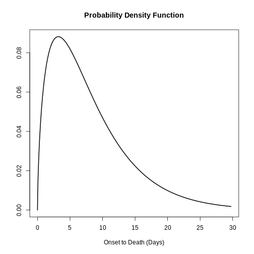
Para calcular el CFR ajustado, podemos utilizar la función
cfr_static(), a través del argumento
delay_density.
R
# Calculate the delay-adjusted CFR
# for the first 30 days
cfr::cfr_static(
data = ebola1976 %>% slice_head(n = 30),
delay_density = function(x) density(onset_to_death_ebola, x)
)
SALIDA
Total cases = 135 and p = 0.955: using Normal approximation to binomial likelihood.SALIDA
severity_estimate severity_low severity_high
1 0.9717 0.8201 0.9866SALIDA
Total cases = 135 and p = 0.955: using Normal approximation to binomial likelihood.La probabilidad de muerte ajustada indicó que la gravedad de la enfermedad al final del brote o con el últimos datos disponibles en ese momento es 0.9717 con un intervalo de confianza del 95% entre 0.8201 y 0.9866, con un valor superior al obtenido a través del cálculo directo sin ajustar.
Utiliza la clase epidist
Cuando utilices una clase <epidist> puedes
utilizar esta expresión como plantilla:
function(x) density(<EPIDIST_OBJECT>, x)
Para distribuciones cuyos parámetros no estén disponibles en
{epiparameter}, te proponemos dos alternativas:
Crear un objeto
<epidist>, que puede ser utilizado con otros paquetes de R para análisis de brotes. Lee la documentación de referencia deepiparameter::epidist()oLee la viñeta para una introducción al trabajo con distribuciones temporales.
Desafío
Utiliza el mismo archivo del reto anterior (sarscov2_casos_muertes.csv).
Estima el CFR ajustado al retraso temporal utilizando la distribución apropiada y
- ¡Compara los valores del CFR ajustado y sin ajuste temporal!
- Encuentra el
<epidist>¡apropiado!
Utilizamos {epiparameter} para acceder a una
distribución temporal para los datos de incidencia agregados del
SARS-CoV-2:
R
library(epiparameter)
sarscov2_delay <-
epidist_db(
disease = "covid",
epi_dist = "onset to death",
single_epidist = TRUE
)
Leemos el archivo de datos mediante readr::read_csv().
Esta función reconoce que la columna date es de la clase
<date>, es decir, una fecha.
R
# read data
# e.g.: if path to file is data/raw-data/ebola_cases.csv then:
sarscov2_input <-
readr::read_csv(here::here("data", "raw-data", "sarscov2_cases_deaths.csv"))
R
# Inspect data
sarscov2_input
SALIDA
# A tibble: 93 × 3
date cases_jpn deaths_jpn
<date> <dbl> <dbl>
1 2020-01-20 1 0
2 2020-01-21 1 0
3 2020-01-22 0 0
4 2020-01-23 1 0
5 2020-01-24 1 0
6 2020-01-25 3 0
7 2020-01-26 3 0
8 2020-01-27 4 0
9 2020-01-28 6 0
10 2020-01-29 7 0
# ℹ 83 more rowsPodemos utilizar dplyr::rename() para cambiar los
nombres de las columnas del archivo a los requeridos
porcfr_static().
R
# Rename before Estimate naive CFR
sarscov2_input %>%
dplyr::rename(
cases = cases_jpn,
deaths = deaths_jpn
) %>%
cfr::cfr_static(delay_density = function(x) density(sarscov2_delay, x))
SALIDA
Total cases = 159402 and p = 0.0734: using Normal approximation to binomial likelihood.SALIDA
severity_estimate severity_low severity_high
1 0.047 0.0221 0.2931Interpreta las diferencias entre las estimaciones de la probabilidad de muerte sin ajustar y con ajuste temporal al intervalo entre la aparición inicial de síntomas en los casos y su muerte.
En cfr_static() y toda la familia de funciones en
cfr_*(), la opción más adecuada son las distribuciones
discretas. Esto se debe a que trabajaremos con datos
diarios de casos y defunciones.
Podemos suponer que la función de densidad de probabilidad (PDF) de una distribución continua es equivalente a la función de masa de probabilidad (PMF) de la distribución discreta correspondiente.
Sin embargo, esta suposición puede no ser adecuada en el caso de
distribuciones con picos pronunciados y baja varianza, en las que los
valores se concentran alrededor de la tendencia central. En tales casos,
se espera que la disparidad media entre la PDF y la PMF sea más
pronunciada en comparación con las distribuciones más dispersas. Una
forma de abordar esto es discretizar la distribución continua. Esto lo
podemos hacer en R, si discretizamos los objetos
<epidist>, utilizando la función
epiparameter::discretise().
Para ajustar la probabilidad de muerte, Nishiura et al., 2009 utilizan los datos de incidencia de casos y muertes para estimar el número de casos con resultados conocidos:
\[ u_t = \dfrac{\sum_{i = 0}^t \sum_{j = 0}^\infty c_{i - j} f_{j}}{\sum_{i = 0} c_i}, \]
donde
- \(c_{t}\) es la incidencia diaria de casos en el momento \(t\),
- \(f_{t}\) es el valor de la función de masa de probabilidad (PMF) de la distribución temporal entre el inicio de síntomas y la muerte, y
- \(u_{t}\) representa el factor de subestimación de los resultados conocidos.
\(u_{t}\) se utiliza para
escalar el valor del número acumulado de casos en el
denominador en el cálculo del CFR. Se calcula internamente con la
función estimate_outcomes()
El estimador para la probabilidad de muerte puede expresarse como:
\[p_{t} = \frac{b_{t}}{u_{t}}\]
donde \(p_{t}\) es la proporción realizada de casos confirmados que morirán a causa de la infección (o el CFR real), y \(b_{t}\) es la estimación cruda y sesgada del CFR.
A partir de esta última ecuación, observamos que el CFR no sesgada \(p_{t}\) es mayor que el CFR sesgada \(b_{t}\) porque en \(u_{t}\) el numerador es menor que el denominador (observa que \(f_{t}\) es la distribución de probabilidad del retraso temporal entre síntomas y muerte). Por tanto, nos referimos a \(b_{t}\) como el estimador sesgado de la probabilidad de muerte.
Cuando observamos todo el curso de una epidemia (desde \(t \rightarrow \infty\)), \(u_{t}\) tiende a 1, lo que hace que \(b_{t}\) tiende a \(p_{t}\) y se convierta en un estimador no sesgado (Nishiura et al., 2009).
Estimación temprana del CFR
En el reto anterior, descubrimos que el valor de la probabilidad de muerte ajustada y no ajustada son diferentes.
La CFR sin ajustar es útil para obtener una estimación global de la gravedad del brote. Una vez que el brote haya finalizado o haya progresado de forma que se notifiquen más muertes, el CFR estimada es entonces más cercana a el CFR “verdadera” o no sesgada.
Por otra parte, el CFR ajustada puede ser utilizada para estimar la gravedad de una enfermedad infecciosa emergente de una forma más temprana durante una epidemia.
Podemos explorar la CFR ajustado al retraso temporal de
forma temprana utilizando la función cfr_rolling()
R
# Calculate the rolling daily naive CFR
# for all the 73 days in the Ebola dataset
rolling_cfr_naive <- cfr::cfr_rolling(data = ebola1976)
SALIDA
`cfr_rolling()` is a convenience function to help understand how additional data influences the overall (static) severity. Use `cfr_time_varying()` instead to estimate severity changes over the course of the outbreak.R
utils::tail(rolling_cfr_naive)
SALIDA
date severity_estimate severity_low severity_high
68 1976-10-31 0.9510204 0.9160061 0.9744387
69 1976-11-01 0.9510204 0.9160061 0.9744387
70 1976-11-02 0.9510204 0.9160061 0.9744387
71 1976-11-03 0.9510204 0.9160061 0.9744387
72 1976-11-04 0.9510204 0.9160061 0.9744387
73 1976-11-05 0.9551020 0.9210866 0.9773771R
# Calculate the rolling daily delay-adjusted CFR
# for all the 73 days in the Ebola dataset
rolling_cfr_adjusted <- cfr::cfr_rolling(
data = ebola1976,
delay_density = function(x) density(onset_to_death_ebola, x)
)
SALIDA
`cfr_rolling()` is a convenience function to help understand how additional data influences the overall (static) severity. Use `cfr_time_varying()` instead to estimate severity changes over the course of the outbreak.SALIDA
Some daily ratios of total deaths to total cases with known outcome are below 0.01%: some CFR estimates may be unreliable.FALSER
utils::tail(rolling_cfr_adjusted)
SALIDA
date severity_estimate severity_low severity_high
68 1976-10-31 0.9843 0.9003 0.9925
69 1976-11-01 0.9843 0.9003 0.9925
70 1976-11-02 0.9817 0.8838 0.9913
71 1976-11-03 0.9817 0.8838 0.9913
72 1976-11-04 0.9817 0.8838 0.9913
73 1976-11-05 0.9818 0.8843 0.9913Con utils::tail() mostramos como los últimos valores
estimados del CFR ajustado y sin ajustar tienen rangos superpuestos de
intervalos de confianza del 95%.
Ahora, visualicemos ambos resultados en una serie temporal. ¿Cómo se comportarían en tiempo real las estimaciones de CFR ajustados y sin ajustar?
R
# get the latest delay-adjusted CFR
rolling_cfr_adjusted_end <-
rolling_cfr_adjusted %>%
dplyr::slice_tail()
# bind by rows both output data frames
bind_rows(
rolling_cfr_naive %>%
mutate(method = "naive"),
rolling_cfr_adjusted %>%
mutate(method = "adjusted")
) %>%
# visualise both adjusted and unadjusted rolling estimates
ggplot() +
geom_ribbon(
aes(
date,
ymin = severity_low,
ymax = severity_high,
fill = method
),
alpha = 0.2, show.legend = FALSE
) +
geom_line(
aes(date, severity_estimate, colour = method)
) +
geom_hline(
data = rolling_cfr_adjusted_end,
aes(yintercept = severity_estimate)
) +
geom_hline(
data = rolling_cfr_adjusted_end,
aes(yintercept = severity_low),
lty = 2
) +
geom_hline(
data = rolling_cfr_adjusted_end,
aes(yintercept = severity_high),
lty = 2
)
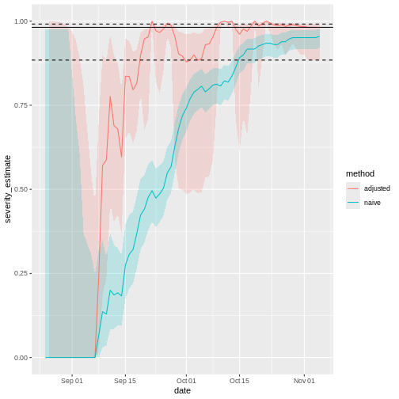
La línea horizontal representa el CFR ajustado al retraso temporal, estimada al final del brote. La línea punteada significa que la estimación tiene un intervalo de confianza del 95% (IC 95%).
Observa que este cálculo ajustado al retraso temporal entre síntomas y muerte es especialmente útil cuando los únicos datos disponibles son curvas epidémica de casos confirmados (es decir, cuando no se dispone de datos individuales, especialmente durante la fase inicial de la epidemia). Cuando hay pocas muertes o ninguna, hay que hacer una suposición para la distribución temporal desde la aparición de síntomas hasta la muerte, por ejemplo, a partir de la literatura basada en brotes anteriores. Nishiura et al., 2009 representan esto en las figuras con datos del brote de SARS en Hong Kong, 2003.
Las figuras A y B muestran el número acumulado de casos y muertes por SRAS, y la figura C muestra las estimaciones observadas (sesgadas) del CFR en función del tiempo, es decir, el número acumulado de muertes sobre casos en el momento \(t\). Debido al retraso temporal desde el inicio de los síntomas hasta la muerte, la estimación sesgada de la probabilidad de muerte en el tiempo \(t\) subestima el valor en las etapas finales del brote (es decir, 302/1755 = 17,2%).
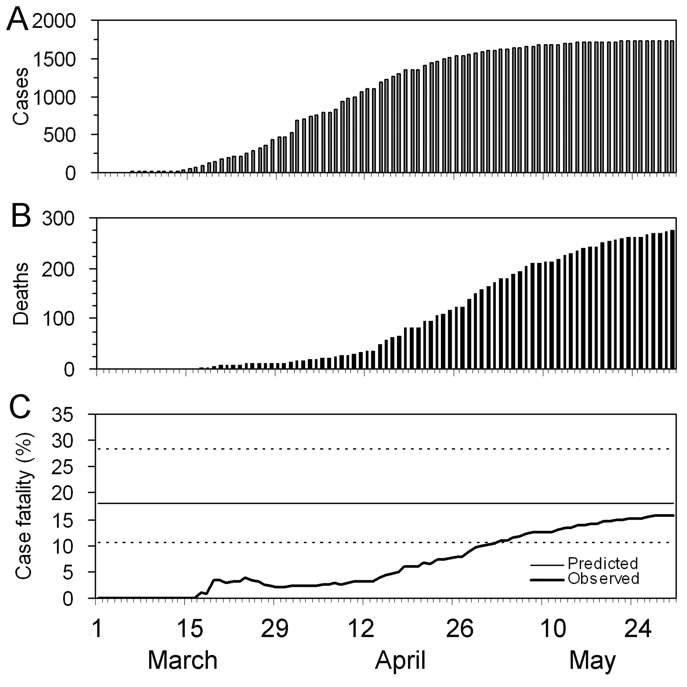
No obstante, incluso utilizando únicamente los datos observados para
el periodo comprendido entre el 19 de marzo y el 2 de abril,
cfr_static() puede obtener una predicción adecuada (Figura
D), por ejemplo, el CFR ajustado al retraso en el 27 de marzo es del
18,1% (IC del 95%: 10,5, 28,1). Se observa una sobreestimación en las
fases muy tempranas de la epidemia, pero los límites de confianza del
95% en las fases posteriores incluyen el CFR realizado (es decir, 17,2
%).
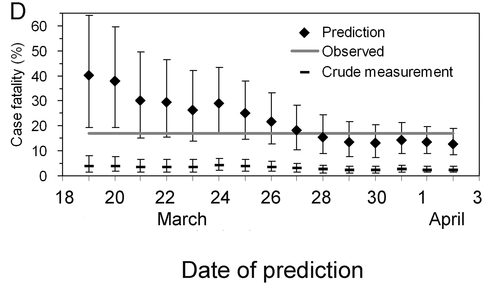
Interpretar la estimación del CFR en la fase inicial del brote
Basándote en la figura anterior:
- ¿Cuántos días hay entre el inicio del brote y la fecha en la que el intervalo de confianza de la CFR ajustado se cruza con el intervalo de confianza de la CFR sin ajustar? ¿Los intervalos se cruzan con el CFR estimada al final del brote?
Discusión:
- ¿Cuáles son las implicaciones para la política de salud pública de tener una CFR ajustado por retraso temporal?
Podemos utilizar la inspección visual o el análisis de los marcos de datos de salida.
Hay casi un mes de diferencia.
Nótese que la estimación tiene una incertidumbre considerable al principio de la serie temporal. Al cabo de dos semanas, el CFR ajustado se aproxima a la estimación global del CFR al final del brote.
¿Es este patrón similar al de otros brotes? Podemos utilizar los conjuntos de datos de los retos de este episodio. ¡Te invitamos a averiguarlo!
Lista de verificación
Con cfr estimamos el CFR como la proporción de muertes entre confirmadas confirmados.
Utilizando sólo el número de casos confirmados está claro que se pasarán por alto todos los casos que no busquen tratamiento médico o no sean notificados, así como todos los casos asintomáticos. Esto significa que la estimación del CFR es superior a la proporción de muertes entre los infectados.
cfr tiene como objetivo obtener un estimador insesgado “mucho antes” de observar el curso completo del brote. Para ello cfr utiliza el factor de subestimación \(u_{t}\) para estimar el CFR sin sesgo \(p_{t}\) , utilizando métodos de máxima verosimilitud, dado el proceso de muestreo definido por Nishiura et al., 2009.

En datos agregados de incidencia en el momento \(t\) conocemos el número acumulado de casos confirmados y muertes, \(C_{t}\) y \(D_{t}\) y deseamos estimar el CFR sin sesgo \(\pi\) mediante el factor de subestimación \(u_{t}\).
Si conociéramos el factor de subestimación \(u_{t}\) podríamos especificar el tamaño de la población de casos confirmados que ya no corren riesgo (\(u_{t}C_{t}\), sombreado), aunque no sabemos qué individuos supervivientes pertenecen a este grupo. Una proporción \(\pi\) de los del grupo de casos aún en riesgo (tamaño \((1- u_{t})C_{t}\), sin sombrear) se espera que muera.
Ya que cada caso que deja de estar en riesgo tiene una probabilidad independiente de morir, \(\pi\) el número de muertes, \(D_{t}\) es una muestra de una distribución binomial con tamaño de muestra \(u_{t}C_{t}\) y probabilidad de morir \(p_{t}\) = \(\pi\).
Esto se representa mediante la siguiente función de verosimilitud para obtener la estimación de máxima verosimilitud del CFR sin sesgo \(p_{t}\) = \(\pi\):
\[ {\sf L}(\pi | C_{t},D_{t},u_{t}) = \log{\dbinom{u_{t}C_{t}}{D_{t}}} + D_{t} \log{\pi} + (u_{t}C_{t} - D_{t})\log{(1 - \pi)}, \]
Esta estimación la realiza la función interna
?cfr:::estimate_severity().
- La CFR ajustado al retraso temporal no aborda todas las fuentes de error en los datos, como el infradiagnóstico de individuos infectados.
Desafíos
Los datos agregados difieren de los listados de casos individuales
Los datos de incidencia agregados difieren de lista en los que cada observación contiene datos a nivel individual.
R
outbreaks::ebola_sierraleone_2014 %>% as_tibble()
SALIDA
# A tibble: 11,903 × 8
id age sex status date_of_onset date_of_sample district chiefdom
<int> <dbl> <fct> <fct> <date> <date> <fct> <fct>
1 1 20 F confirmed 2014-05-18 2014-05-23 Kailahun Kissi Teng
2 2 42 F confirmed 2014-05-20 2014-05-25 Kailahun Kissi Teng
3 3 45 F confirmed 2014-05-20 2014-05-25 Kailahun Kissi Tonge
4 4 15 F confirmed 2014-05-21 2014-05-26 Kailahun Kissi Teng
5 5 19 F confirmed 2014-05-21 2014-05-26 Kailahun Kissi Teng
6 6 55 F confirmed 2014-05-21 2014-05-26 Kailahun Kissi Teng
7 7 50 F confirmed 2014-05-21 2014-05-26 Kailahun Kissi Teng
8 8 8 F confirmed 2014-05-22 2014-05-27 Kailahun Kissi Teng
9 9 54 F confirmed 2014-05-22 2014-05-27 Kailahun Kissi Teng
10 10 57 F confirmed 2014-05-22 2014-05-27 Kailahun Kissi Teng
# ℹ 11,893 more rows¿Cómo reorganizar mis datos de entrada?
Reorganizar los datos de entrada para el análisis de datos puede llevarte la mayor parte del tiempo. Para estar listo para el análisis con datos de incidencia agregados te animamos a utilizar incidence2 ¡!
Primero, en la viñeta Inicio
de incidence2 explora cómo utilizar
date_index al leer un listado de casos con fechas en varias
columnas.
A continuación, consulta la viñeta Manejo
de datos de {incidence2} del paquete
cfr, sobre cómo utilizar la función
cfr::prepare_data() con los objetos incidence2.
R
# Carga los paquetes
library(cfr)
library(epiparameter)
library(incidence2)
library(outbreaks)
library(tidyverse)
# Accede a la distribución de retrasos temporales
mers_delay <-
epidist_db(
disease = "mers",
epi_dist = "onset to death",
single_epidist = TRUE
)
# Lee el listado de casos
mers_korea_2015$linelist %>%
as_tibble() %>%
select(starts_with("dt_"))
SALIDA
# A tibble: 162 × 6
dt_onset dt_report dt_start_exp dt_end_exp dt_diag dt_death
<date> <date> <date> <date> <date> <date>
1 2015-05-11 2015-05-19 2015-04-18 2015-05-04 2015-05-20 NA
2 2015-05-18 2015-05-20 2015-05-15 2015-05-20 2015-05-20 NA
3 2015-05-20 2015-05-20 2015-05-16 2015-05-16 2015-05-21 2015-06-04
4 2015-05-25 2015-05-26 2015-05-16 2015-05-20 2015-05-26 NA
5 2015-05-25 2015-05-27 2015-05-17 2015-05-17 2015-05-26 NA
6 2015-05-24 2015-05-28 2015-05-15 2015-05-17 2015-05-28 2015-06-01
7 2015-05-21 2015-05-28 2015-05-16 2015-05-17 2015-05-28 NA
8 2015-05-26 2015-05-29 2015-05-15 2015-05-15 2015-05-29 NA
9 NA 2015-05-29 2015-05-15 2015-05-17 2015-05-29 NA
10 2015-05-21 2015-05-29 2015-05-16 2015-05-16 2015-05-29 NA
# ℹ 152 more rowsR
# Usa {incidence2} para contabilizar la incidencia diaria
mers_incidence <- mers_korea_2015$linelist %>%
# convertir a un objeto incidence2
incidence(date_index = c("dt_onset", "dt_death")) %>%
# completa las fechas de la primera a la última
incidence2::complete_dates()
# Explora los resultados de incidence2
mers_incidence
SALIDA
# incidence: 72 x 3
# count vars: dt_death, dt_onset
date_index count_variable count
<date> <chr> <int>
1 2015-05-11 dt_death 0
2 2015-05-11 dt_onset 1
3 2015-05-12 dt_death 0
4 2015-05-12 dt_onset 0
5 2015-05-13 dt_death 0
6 2015-05-13 dt_onset 0
7 2015-05-14 dt_death 0
8 2015-05-14 dt_onset 0
9 2015-05-15 dt_death 0
10 2015-05-15 dt_onset 0
# ℹ 62 more rowsR
# Prepara los datos {incidence2} para usarlos en {cfr}
mers_incidence %>%
prepare_data(
cases_variable = "dt_onset",
deaths_variable = "dt_death"
)
SALIDA
date deaths cases
1 2015-05-11 0 1
2 2015-05-12 0 0
3 2015-05-13 0 0
4 2015-05-14 0 0
5 2015-05-15 0 0
6 2015-05-16 0 0
7 2015-05-17 0 1
8 2015-05-18 0 1
9 2015-05-19 0 0
10 2015-05-20 0 5
11 2015-05-21 0 6
12 2015-05-22 0 2
13 2015-05-23 0 4
14 2015-05-24 0 2
15 2015-05-25 0 3
16 2015-05-26 0 1
17 2015-05-27 0 2
18 2015-05-28 0 1
19 2015-05-29 0 3
20 2015-05-30 0 5
21 2015-05-31 0 10
22 2015-06-01 2 16
23 2015-06-02 0 11
24 2015-06-03 1 7
25 2015-06-04 1 12
26 2015-06-05 1 9
27 2015-06-06 0 7
28 2015-06-07 0 7
29 2015-06-08 2 6
30 2015-06-09 0 1
31 2015-06-10 2 6
32 2015-06-11 1 3
33 2015-06-12 0 0
34 2015-06-13 0 2
35 2015-06-14 0 0
36 2015-06-15 0 1R
# Estima el CFR ajustado a retrasos temporales
mers_incidence %>%
cfr::prepare_data(
cases_variable = "dt_onset",
deaths_variable = "dt_death"
) %>%
cfr::cfr_static(delay_density = function(x) density(mers_delay, x))
SALIDA
severity_estimate severity_low severity_high
1 0.0907 0.042 0.4847Heterogeneidad de la gravedad
La CFR puede diferir entre poblaciones (por ejemplo, edad, espacio, tratamiento); cuantificar estas heterogeneidades puede ayudar a dirigir los recursos adecuadamente y a comparar distintos regímenes asistenciales (Cori et al., 2017).
Utiliza la base de datos cfr::covid_data para estimar
una CFR ajustado al retraso temporal estratificada por países.
Una forma de hacer un análisis estratificado es aplicar un
modelo a datos anidados. Esta viñeta
{tidyr} te muestra cómo aplicar la función
group_by() + nest() a los datos anidados, y
luego mutate() + map() para aplicar el
modelo.
R
library(cfr)
library(epiparameter)
library(tidyverse)
covid_data %>% glimpse()
SALIDA
Rows: 20,786
Columns: 4
$ date <date> 2020-01-03, 2020-01-03, 2020-01-03, 2020-01-03, 2020-01-03, 2…
$ country <chr> "Argentina", "Brazil", "Colombia", "France", "Germany", "India…
$ cases <dbl> 0, 0, 0, 0, 0, 0, 0, 0, 0, 0, 0, 0, 0, 0, 0, 0, 0, 0, 0, 0, 0,…
$ deaths <dbl> 0, 0, 0, 0, 0, 0, 0, 0, 0, 0, 0, 0, 0, 0, 0, 0, 0, 0, 0, 0, 0,…R
delay_onset_death <-
epidist_db(
disease = "covid",
epi_dist = "onset to death",
single_epidist = TRUE
)
covid_data %>%
group_by(country) %>%
nest() %>%
mutate(
temp =
map(
.x = data,
.f = cfr::cfr_static,
delay_density = function(x) density(delay_onset_death, x)
)
) %>%
unnest(cols = temp)
SALIDA
# A tibble: 19 × 5
# Groups: country [19]
country data severity_estimate severity_low severity_high
<chr> <list> <dbl> <dbl> <dbl>
1 Argentina <tibble> 0.0133 0.0133 0.0133
2 Brazil <tibble> 0.0195 0.0195 0.0195
3 Colombia <tibble> 0.0225 0.0224 0.0226
4 France <tibble> 0.0044 0.0044 0.0044
5 Germany <tibble> 0.0045 0.0045 0.0045
6 India <tibble> 0.0119 0.0119 0.0119
7 Indonesia <tibble> 0.024 0.0239 0.0241
8 Iran <tibble> 0.0191 0.0191 0.0192
9 Italy <tibble> 0.0075 0.0075 0.0075
10 Mexico <tibble> 0.0461 0.046 0.0462
11 Peru <tibble> 0.0318 0.0151 0.202
12 Poland <tibble> 0.0186 0.0186 0.0187
13 Russia <tibble> 0.0182 0.0182 0.0182
14 South Africa <tibble> 0.0254 0.0253 0.0255
15 Spain <tibble> 0.0087 0.0087 0.0087
16 Turkey <tibble> 0.006 0.006 0.006
17 Ukraine <tibble> 0.0204 0.0203 0.0205
18 United Kingdom <tibble> 0.009 0.009 0.009
19 United States <tibble> 0.0111 0.0111 0.0111¡Estupendo! Ahora puedes utilizar un código similar para cualquier otro análisis estratificado, como la edad, las regiones u otros.
Pero, ¿cómo podemos interpretar que existe una variabilidad de gravedad por países a partir del mismo patógeno diagnosticado?
Factores locales como la capacidad de análisis, la definición de caso y el régimen de muestreo pueden afectar a la notificación de casos y muertes, afectando así a la comprobación de los casos. Echa un vistazo a la viñeta Estimar la proporción de casos que se determinan durante un brote del paquete cfr para más información ¡!
Apéndice
El paquete cfr tiene una función llamada
cfr_time_varying() con una funcionalidad distinta de
cfr_rolling().
¿Cuándo utilizar cfr_rolling()?
cfr_rolling() muestra el CFR estimada en cada día del brote, dado que los datos futuros sobre casos y muertes no están disponibles en ese momento. El valor final de cfr_rolling() estimado es idéntico al de cfr_static() con los mismos datos.
Recuerda, como se muestra arriba cfr_rolling() es útil para obtener estimaciones del CFR en las primeras fases y comprobar si la estimación del CFR de un brote se ha estabilizado. Así, cfr_rolling() no es sensible a la duración ni al tamaño de la epidemia.
¿Cuándo utilizar cfr_time_varying()?
Por otra parte, cfr_time_varying() calcula el CFR a lo largo de una ventana móvil y ayuda a comprender los cambios en el CFR debidos a cambios en la epidemia, por ejemplo, debidos a una nueva variante o a una mayor inmunidad por vacunación.
Sin embargo, cfr_time_variying() es sensible a la incertidumbre del muestreo. Por tanto, es sensible al tamaño del brote. Cuanto mayor sea el número de casos con resultados esperados en un día determinado, más estimaciones razonables del CFR variable en el tiempo obtendremos.
Por ejemplo, con 100 casos, la estimación del riesgo de mortalidad tendrá, a grandes rasgos, un intervalo de confianza del 95% ±10% de la estimación media (IC binomial). Por tanto, si tenemos >100 casos con resultados esperados en un día determinado podemos obtener estimaciones razonables del CFR variable en el tiempo. Pero si sólo tenemos >100 casos a lo largo de toda la epidemia probablemente tengamos que basarnos en cfr_rolling() que utiliza los datos acumulados.
Te invitamos a leer esta viñeta
sobre cfr_time_varying().
Más medidas de gravedad
Supongamos que necesitamos evaluar la gravedad clínica de la epidemia en un contexto distinto al de los datos de vigilancia, como la gravedad entre los casos que llegan a los hospitales o los casos que recogiste en una encuesta serológica representativa.
Utilizando cfr podemos cambiar las entradas para el
numerador casos (cases) y el denominador
muertes (deaths) para estimar más medidas
de gravedad, como el Riesgo de Fatalidad por Infección (RFI) o el Riesgo
de Fatalidad por Hospitalización (RFH). Podemos seguir esta
analogía:
Si para la una probabilidad de muerte (CFR o CFR en inglés), exigimos:
- Incidencia de casos y muertes, con una:
- Distribución de retraso temporal entre casos y muertes (o una aproximación cercana, como el tiempo entre inicio de los síntomas y la muerte).
Entonces, el Riesgo de Fatalidad por Infección (IFR, por sus siglas en inglés) requiere:
- Incidencia de infecciones y muertes, con una:
- Distribución de retraso temporal desde la infección hasta la muerte (o una aproximación cercana).
Del mismo modo, el Riesgo de Fatalidad por Hospitalización (HFR) requiere:
- Incidencia de hospitalizaciones y muertes, y una:
- Distribución del retraso temporal entre la hospitalización y la muerte.
Yang et al., 2020 resume diferentes definiciones y fuentes de datos:
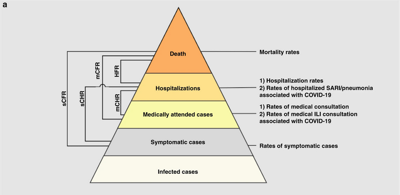
- sCFR riesgo sintomático de muerte,
- sCHR riesgo sintomático de hospitalización,
- mCFR riesgo de caso-fatalidad médicamente atendido,
- mCHR riesgo de hospitalización de casos atendidos médicamente,
- HFR riesgo de hospitalización-fatalidad.

Discusión
Basándote en tu experiencia:
- Comparte algún brote anterior en el que hayas participado en su respuesta.
Responde a estas preguntas:
- ¿Cómo evaluaste la gravedad clínica del brote?
- ¿Cuáles fueron las principales fuentes de sesgo?
- ¿Qué hiciste para tener en cuenta el sesgo identificado?
- ¿Qué análisis complementario harías para resolver el sesgo?
Puntos Clave
Utiliza cfr para estimar la gravedad
Utiliza
cfr_static()para estimar el CFR global con los últimos datos disponibles.Utiliza
cfr_rolling()para mostrar cuál sería el CFR estimada en cada día del brote.Utiliza la
delay_densitypara ajustar el CFR según la distribución de retrasos correspondiente.